Chapitre 3
Espaces Fibrés
3.1 Généralités
3.1.1 Le langage des fibrés
Avant d’introduire la notion d’espace fibré, nous allons montrer comment “le
langage des fibrés” permet d’analyser de manière originale un aspect bien connu
de la théorie des ensembles, à savoir la notion d’application d’un ensemble dans
un autre, tout en y apportant un nouvel éclairage.
Soit π une application quelconque de P (espace de départ) dans M (espace
d’arrivée). L’application π n’ayant aucune raison d’être injective, notons
Fx = π−1(x) l’ensemble des antécédents de x ∈ M par π. Lorsque x décrit M, les
ensembles Fx sont, bien entendu, distincts, puisque π est une application (il n’en
serait pas nécessairement ainsi dans le cas où π serait une simple correspondance).
En général aussi, la cardinalité de Fx, ou même sa structure topologique peut
varier avec x.
Utiliser “le langage des fibrés” consiste à effectuer le changement de
vocabulaire suivant :
| Espace de départ P | −→ | Espace total P |
| Espace d’arrivée M | −→ | Base M |
| Application π | −→ | Projection π |
| Ensemble Fx des antécédents de x | −→ | Fibre Fx au dessus de x |
et schématiser la situation par le dessin 3.1.
On peut toujours supposer π surjective, au besoin en dégonflant l’espace
d’arrivée M, mais π ne sera pas, en général, injective (en d’autres termes,
card(Fx) est, en général, plus grand que 1). Choisissons donc, pour chaque x de
M, un certain antécédent, c’est à dire un élément de Fx. Nous noterons σ(x)
l’antécédent choisi. Par construction, σ est une application de M dans P telle que
π ∘σ = 1 l, où le 1 l du membre de droite désigne l’application identique de M. Une
telle application σ est, par définition, une section de l’application P M. Le mot
“section” vient du fait qu’intuitivement, on définit σ en découpant avec des
ciseaux la figure 3.1 le long du pointillé. Le fait que π ne soit pas injective montre
qu’il existe généralement de nombreuses sections σ différentes (notons que nous
n’avons, pour le moment, rien imposé sur l’application σ). Chacune de ces
sections définit donc un inverse (à droite) pour l’application π ; encore une fois,
il nous faut insister sur le fait qu’il existe en général plusieurs sections et que
le choix d’une telle section résulte … d’un choix ! Lorsque M est muni
d’une topologie, le choix d’une section au dessus d’un ouvert U ⊂ M est
désigné sous le nom de “choix d’une section locale pour l’application
π”.
M. Le mot
“section” vient du fait qu’intuitivement, on définit σ en découpant avec des
ciseaux la figure 3.1 le long du pointillé. Le fait que π ne soit pas injective montre
qu’il existe généralement de nombreuses sections σ différentes (notons que nous
n’avons, pour le moment, rien imposé sur l’application σ). Chacune de ces
sections définit donc un inverse (à droite) pour l’application π ; encore une fois,
il nous faut insister sur le fait qu’il existe en général plusieurs sections et que
le choix d’une telle section résulte … d’un choix ! Lorsque M est muni
d’une topologie, le choix d’une section au dessus d’un ouvert U ⊂ M est
désigné sous le nom de “choix d’une section locale pour l’application
π”.
Le vocabulaire précédent est tellement général qu’il est utilisable
pour des applications entre ensembles quelconques. Le lecteur pourra
donc s’amuser à “repenser”, en ces termes, certaines de ses applications
favorites.
Considérons, à titre d’exemple, l’application suivante qui, à tout point de la
sphère unité, associe sa projection sur l’axe Oz :
-
Espace de départ
- (espace total) P : la sphère S2 de centre O et de
rayon 1 incluse dans ℝ2.
-
Espace d’arrivée
- (base) M : le segment {(0, 0,z)tel quez ∈ [−1, +1]}
-
Application
- π : (x,y,z) ∈ S2
 (0, 0,z) ∈ M
(0, 0,z) ∈ M
La fibre au dessus d’un point quelconque intérieur au segment M est un cercle
de S2 parallèle à l’équateur xOy. Lorsque le point de M choisi coïncide avec l’un
des deux pôles {0, 0,±1}, la fibre correspondante se réduit à un point (cercle de
rayon nul).
De la même façon, l’analyse de la fonction exponentielle iθ ∈ P = iℝ eiθ ∈ M = S1
en utilisant le langage des fibrés revient à “regarder” la figure 3.2
eiθ ∈ M = S1
en utilisant le langage des fibrés revient à “regarder” la figure 3.2
Dans le cas présent, la fibre au dessus de n’importe quel point xθ = eiθ du
cercle S1 est un ensemble F
θ = {θ + 2kπ tel que k ∈ ℤ} qu’on peut mettre en
bijection avec l’ensemble des entiers ℤ. Toute section définit un inverse
pour l’exponentielle, c’est à dire une détermination du logarithme :
exp Logeiθ = eiθ ; en pratique, on veut que ces déterminations soient des fonctions
continues, ce qui impose des conditions supplémentaires sur les sections
correspondantes.
3.1.2 Fibrations. Fibrés différentiables localement triviaux
Fibration
Comme nous venons de le voir, toute application peut être décrite dans le
“langage des fibrés”, mais toute application n’est pas une fibration : dans le cadre
de cet ouvrage, nous travaillons dans la catégorie des variétés différentiables et
nous dirons qu’une application π : P → M est une fibration si toutes les fibres
π−1(x), x ∈ M sont difféomorphes (on suppose ici que P et M sont des variétés et
que π est différentiable). Plus généralement, même dans le cas où les fibres sont
discrètes, on dira qu’on a affaire à une fibration si toutes les fibres ont même
cardinalité.
Puisque toutes les fibres sont difféomorphes, on dira que la fibre type est F
lorsque toutes les fibres sont “de type F”, ce qui signifie : difféomorphes à
F.
Fibré localement trivial
Soit P → M une fibration et U ⊂ M un ouvert de M appartenant à l’atlas
définissant la structure différentiable de M. On a envie, intuitivement, de se
représenter l’ensemble des antécédents π−1(U) comme un cylindre “au dessus de
U” (voir figure 3.3).
On appelle espace fibré localement trivial la donnée d’une fibration (P,M,π)
telle que, pour tout ouvert U de M, l’ensemble π−1(U) soit difféomorphe à
U × F où F est la fibre type de la fibration. La condition de trivialité
locale est souvent sous-entendue, et on parle alors simplement d’espace
fibré.
Remarques
- En anglais, les deux expressions “fibered space” et “fiber bundle”
correspondent respectivement aux termes “fibrations” et “espace fibré
localement trivial”, tout au moins, en général.
- Dans la suite de cet ouvrage, nous ne considérerons que des espaces
fibrés localement triviaux, sauf mention explicite du contraire. Pour
cette raison, nous utiliserons souvent les deux expressions “fibration”
et “fibré localement trivial” de façon équivalente et donc sans faire
explicitement mention de la propriété de trivialité locale.
- Comme on l’a écrit plus haut, un espace fibré est défini par un triplet
(P,M,π) car il peut, en effet, exister plusieurs fibrations différentes
(P,M′,π′) et (P,M,π) du même espace total P. Par abus de langage,
et dans le cas où l’on s’intéresse à une seule fibration pour un espace
total P donné, on pourra dire que P lui même est un espace fibré.
- Intuitivement, dire que P est un espace fibré revient à dire que P
est une collection de fibres de même type et “collées” ensemble.
L’ensemble des fibres (l’ensemble dont les différents éléments sont les
fibres) est, par définition, l’espace de base M et l’application π est
celle qui associe à tout point z de P la fibre à laquelle il appartient.
On dira également que P est un espace qui peut être fibré en espaces
F au dessus de M (voir la figure 3.3).
Fibré trivial
Dire que (P,M,π) est localement trivial consiste à affirmer, comme nous l’avons
vu, que localement, l’espace total P ressemble à un produit : c’est la propriété
π−1(U) ≃ U × F. Cependant, le fait que P ≃ M × F n’est pas une propriété
imposée. Lorsque tel est le cas, on dit que P est un fibré trivial. Bien
qu’utilisable en toute généralité, la théorie des espaces fibrés est surtout
intéressante lorsque P est seulement localement trivial, mais n’est pas
trivial. Nous rencontrerons une multitude de tels exemples dans ce qui
suit.
Trivialisations locales
Lorsque U est un ouvert de M, dire que π−1(U) est difféomorphe à U ×F revient
à dire qu’il existe un difféomorphisme ψU entre les deux ensembles :
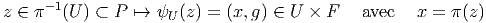
L’application ψU prend le nom de trivialisation locale relative à l’ouvert U. Bien
entendu, une telle trivialisation est loin d’être unique puisque la composée
(1 lM × ϕ) ∘ ψU de ψU avec (1 lM × ϕ), ϕ désignant un difféomorphisme quelconque
de la fibre type F, fournit une autre trivialisation.
La trivialisation ψU(z) = (x = π(z),g) est parfaitement caractérisée
par l’application gU : π−1(U) → F définie par g
U(z) = g ; en d’autres
termes, le point z de P est caractérisé par le point x = π(z) sur M et le
point g = gU(z) sur F. Seul le point x est canoniquement défini par la
fibration ; l’élément g de F, au contraire, résulte du choix d’une trivialisation
locale. Pour que ces deux composantes (les deux points (x,g) ∈ M × F)
deviennent des coordonnées (des nombres), il suffit de choisir un repère local
sur M et sur F. On pourra schématiser la situation par la figure 3.4.
Sous-fibrés
Soient (P,M,π) et (P′,M′,π′) deux espaces fibrés. On dira que le premier est un
sous-fibré du second si P (respectivement M) est une sous-variété de P′
(respectivement M′) et si π coïncide avec la restriction correspondante de
π′.
3.2 Espaces fibrés principaux
3.2.1 La structure d’espace fibré principal
Une fibration (P,M,π) est un espace fibré principal lorsque les trois conditions
suivantes sont satisfaites :
- (P,M,π) est un espace fibré localement trivial.
- Un groupe de Lie G agit (à droite) sur P, et ce, de façon transitive
dans chaque fibre.
- Toutes les fibres sont homéomorphes à G.
Les trois conditions ci-dessus sont obligatoires pour qu’on puisse parler de
fibré principal car nous verrons un peu plus loin des exemples où (1) et (2) sont
vérifiées (mais pas (3)) et des exemples où (1) et (3) sont vérifiées (mais pas
(2)).
En général, on considère des espaces fibrés principaux à droite, comme
ci-dessus, mais il est bien évident qu’on peut également considérer des espaces
fibrés principaux à gauche.
Le groupe G (la fibre type) est généralement désigné sous le nom de groupe
structural du fibré considéré. Afin d’alléger les notations, nous noterons très
simplement l’action de G sur P : Soient z1 ∈ P et g ∈ G, l’image z2 de z1 sous
l’action de g sera notée z2 = z1g, ce qui peut être décrit, de façon imagée, par la
figure 3.5.
Attention : Parce que G agit sur P, de nombreux physiciens désignent ces
transformations de P dans P (du type z ∈ P z′ = zg,g ∈ G) sous le nom de
transformations de jauge globales et désignent également G lui même sous le nom
de groupe de jauge ; cependant nous réserverons ce dernier vocable (groupe de
jauge) pour le groupe des transformations de jauge locales que nous définirons un
peu plus loin.
z′ = zg,g ∈ G) sous le nom de
transformations de jauge globales et désignent également G lui même sous le nom
de groupe de jauge ; cependant nous réserverons ce dernier vocable (groupe de
jauge) pour le groupe des transformations de jauge locales que nous définirons un
peu plus loin.
La relation z2 = z1g est formellement très semblable à la relation élémentaire
A2 = A1 + 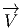 où A1 et A2 désignent deux points d’un espace affine et où 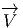
désigne un vecteur de l’espace vectoriel sous-jacent. Les élèves de nos lycées
savent bien qu’on peut “soustraire” deux points en écrivant  = A2 −A1 (on n’a
pas le droit d’“additionner” deux points !). De la même façon, on pourra écrire
ici g = z1−1z
2, puisque z1g = z2 et que g est bien déterminé par la donnée de z1
et de z2. Notons enfin que l’analogue de la célèbre “relation de Chasles” s’écrit
z1−1z
2 = (z1−1z
3)(z3−1z
2).
= A2 −A1 (on n’a
pas le droit d’“additionner” deux points !). De la même façon, on pourra écrire
ici g = z1−1z
2, puisque z1g = z2 et que g est bien déterminé par la donnée de z1
et de z2. Notons enfin que l’analogue de la célèbre “relation de Chasles” s’écrit
z1−1z
2 = (z1−1z
3)(z3−1z
2).
3.2.2 Sections locales et trivialisations locales
Dans le cas d’un fibré principal, chaque fibre Gx au dessus de x, élément de M est
une “copie” du groupe G, mais il s’agit d’une copie au sens topologique (ou
différentiable) du terme car l’origine du groupe G (l’élément neutre) est
connue mais celle de la fibre Gx ne l’est pas ! Afin de mieux faire sentir le
sens de cette importante remarque, considérons l’exemple suivant 3.6
Dans le cas présent, P est un cylindre fini P = M ×S1 où M est un intervalle
et S1 désigne le cercle de rayon 1 ; la fibre au dessus de x est un cercle, et ce
cercle, comme tous les cercles, est homéomorphe au groupe U(1). Sur ce cercle,
tous les points “se valent” et on ne sait pas multiplier un point par un autre. Par
contre, si le cercle est marqué par une origine, il devient isomorphe au groupe
U(1) et on sait alors multiplier les points (eiθeiα = ei(θ+α)). Le groupe U(1) agit
bien sur l’ensemble P ci-dessus en faisant tourner un point quelconque z ∈ P d’un
angle θ.
Revenons au cas général d’un fibré principal (P,M,π) de groupe structural G.
Le choix d’une section locale x ∈ U ⊂ M σ(x) ∈ P permet de “marquer une
origine” sur chacune des fibres Gx situées au dessus de l’ouvert U. En
d’autres termes, le choix d’une section locale σ permet d’identifier la fibre
Gx avec le groupe G lui-même. La façon la plus simple d’exprimer ceci
de façon algébrique consiste à montrer qu’à la section locale σ on peut
associer une trivialisation locale ψU définie comme suit : soit z ∈ P,
alors ψU(z) = (x; gσ) où x = π(z) et où gσ désigne l’unique élément de G
défini par z = σ(x)gσ. En effet, z et σ(x) étant dans la même fibre, il
existe un et un seul élément gσ de G permettant de passer de σ(x) à
z ; l’existence et l’unicité de cet élément gσ résulte des axiomes (2) et
(3) de la structure de fibré principal. Une section locale σ définit donc
également une application — que nous noterons encore gσ — de P dans
G ; en d’autres termes, les “composantes” de z ∈ P sont x = π(z) ∈ M
et gσ = gσ(z) ∈ G. La composante x est canoniquement définie par la
structure fibrée et la composante gσ résulte du choix d’une section locale
σ.
σ(x) ∈ P permet de “marquer une
origine” sur chacune des fibres Gx situées au dessus de l’ouvert U. En
d’autres termes, le choix d’une section locale σ permet d’identifier la fibre
Gx avec le groupe G lui-même. La façon la plus simple d’exprimer ceci
de façon algébrique consiste à montrer qu’à la section locale σ on peut
associer une trivialisation locale ψU définie comme suit : soit z ∈ P,
alors ψU(z) = (x; gσ) où x = π(z) et où gσ désigne l’unique élément de G
défini par z = σ(x)gσ. En effet, z et σ(x) étant dans la même fibre, il
existe un et un seul élément gσ de G permettant de passer de σ(x) à
z ; l’existence et l’unicité de cet élément gσ résulte des axiomes (2) et
(3) de la structure de fibré principal. Une section locale σ définit donc
également une application — que nous noterons encore gσ — de P dans
G ; en d’autres termes, les “composantes” de z ∈ P sont x = π(z) ∈ M
et gσ = gσ(z) ∈ G. La composante x est canoniquement définie par la
structure fibrée et la composante gσ résulte du choix d’une section locale
σ.
Il faut enfin noter que le choix d’une section locale permet de définir
localement l’action à gauche du groupe G sur P ; en effet, en plus de l’action à
droite z ∈ P,k ∈ G → zk = (x; gσ)k = (x; gσk) ∈ P qui ne dépend pas
de σ et qui est globalement définie puisqu’elle résulte de la structure
d’espace fibré principal, on peut définir localement une action à gauche
z ∈ P,k ∈ G → (kz)σ = (x; kgσ) ∈ P, qui dépend de σ.
Supposons que nous ayons fait le choix d’une section locale σ au dessus de
l’ouvert U et d’une section locale τ au dessus de l’ouvert V ; si on fait un choix
de z ∈ P tel que la projection π(z) appartienne à l’intersection U ∩ V , on peut
écrire aussi bien z 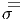 (x; gσ) que z  (x; gτ). Il existe donc un élément gστ du
groupe G (et en fait une fonction gστ(x) définie sur U ∩ V ) tel que gσ = gστgτ.
Cette fonction porte le nom de fonction de transition . Ces fonctions de
transition permettent en fait de reconstruire le fibré principal lui-même. On
montre qu’étant donnés un atlas de M et une famille de fonctions de
transition obéissant à une certaine propriété (dite de cocycle) sur les
triples intersections, il est possible de reconstruire l’espace fibré dont on est
parti.
(x; gτ). Il existe donc un élément gστ du
groupe G (et en fait une fonction gστ(x) définie sur U ∩ V ) tel que gσ = gστgτ.
Cette fonction porte le nom de fonction de transition . Ces fonctions de
transition permettent en fait de reconstruire le fibré principal lui-même. On
montre qu’étant donnés un atlas de M et une famille de fonctions de
transition obéissant à une certaine propriété (dite de cocycle) sur les
triples intersections, il est possible de reconstruire l’espace fibré dont on est
parti.
3.2.3 Exemple fondamental : le fibré des repères linéaires
L’exemple qui suit est fondamental, non seulement parce qu’il est
mathématiquement important — il est d’ailleurs à l’origine de toute la
théorie des espaces fibrés — mais aussi parce qu’il permet de fournir
un support à notre intuition géométrique, en particulier dans le cas où
l’on s’intéresse à des fibrés principaux (P,M,π) quelconques. L’exemple
fondamental étudié ici nous permettra de développer les analogies suivantes :
- Considérer l’espace total P comme un ensemble de repères généralisés
sur la base M.
- Considérer le groupe structural G comme groupe de transformations
de repères.
- Considérer un élément quelconque z de P comme un repère
(généralisé) situé au point x de M (avec x = π(z)).
- Considérer toute section locale σ(x) comme un repère mobile
(généralisé) dans l’ouvert U.
- Considérer les fonctions de transition gστ comme décrivant des
changements de repère mobile.
- etc
Soit M une variété différentiable de dimension n. En chaque point x de M
nous avons un espace tangent T(M,x) et nous pouvons considérer l’ensemble Gx
de tous les repères en x. Un point z de Gx est donc un repère en x, c’est à dire la
donnée de n vecteurs indépendants de T(M,x). Soit P = ⋃
x∈MGx l’ensemble de
tous les repères de M. Notons π l’application qui, à un repère centré
sur x, associe l’origine x elle-même ; il est facile de voir que (P,M,π)
est un espace fibré principal de groupe structural GL(n). Il est clair,
en effet, que le groupe linéaire GL(n) agit transitivement sur chaque
fibre de P : la fibre Gx au dessus de x n’est autre que l’ensemble des
repères en x et il est bien évident qu’on peut toujours passer d’un repère
z = (zi)i∈{1…n} à un repère z′ = (z′j) au même point x à l’aide d’un élément
g = (gji) de GL(n) : (z′
j = zigji). Par ailleurs, le fait que l’ensemble G
x
des repères en x soit homéomorphe à GL(n) peut se voir de la façon
suivante : marquons (choisissons) un repère de référence σ = (σ)i en
x ; alors, tout élément g de GL(n) définit un nouveau repère z = σg
au même point, mais réciproquement, tout nouveau repère z détermine
un et un seul élément g de GL(n) tel que z = σg. On obtient donc une
correspondance bi-univoque entre repères en x et éléments de GL(n) ; bien
entendu, cette correspondance dépend du choix du repère de référence σ. Il
resterait à montrer que cette application est bel et bien continue et à vérifier
les conditions de trivialité locale. Le fibré principal P ainsi construit se
note parfois FM (pour “Frame bundle of M”) et s’appelle le fibré des
repères linéaires sur M. Nous invitons le lecteur à relire la sous-section
précédente avec cet exemple en tête ; il est alors clair qu’une section locale
n’est autre qu’un repère mobile choisi dans le domaine d’un ouvert et
qu’une fonction de transition n’est autre qu’un changement de repère
mobile.
3.2.4 Sous-espace des vecteurs verticaux en un point z d’un espace
fibré
- Soit P un espace fibré principal et z un élément de P. P est, en
particulier, une variété, et toutes les constructions étudiées dans le
contexte des variétés différentiables peuvent être effectuées et on peut
donc considérer l’espace tangent à P en z que l’on notera T(P,z).
Cet espace vectoriel est évidemment de dimension m + n lorsque
dimM = m et dimG = n, M et G désignant respectivement la base
et la fibre type de P.
- Plutôt que de considérer l’espace tangent à tout l’espace P en z, nous
pouvons considérer l’espace tangent à la fibre Fx de P qui passe par
z (c’est à dire x = π(z)) ; cet espace vectoriel V z = T(Fx,z) est
naturellement un sous-espace vectoriel de T(P,z). Sa dimension est
égale à n puisque toutes les fibres ont dimension n. Le sous-espace V z
s’appelle espace tangent vertical au point z.
- Intuitivement, un vecteur est un petit déplacement (une flèche !).
Un vecteur de l’espace tangent T(P,z) est donc un déplacement
infinitésimal d’un “repère” (nous pensons intuitivement à z comme
étant une sorte de repère généralisé). Un déplacement infinitésimal
dans l’ensemble des repères peut s’analyser à l’aide de deux
mouvements très différents : on peut faire tourner le repère (sans
bouger l’origine) mais on peut également déplacer l’origine du
repère. Les déplacements verticaux du point z correspondent à des
mouvements de z dans sa fibre : on ne déplace pas le point de
base x = π(z) ; ainsi, les vecteurs de V z (les vecteurs verticaux
en z) correspondent à des déplacements infinitésimaux du repère
z qui n’entraînent aucun déplacement de l’origine x : on se
contente de “faire tourner” infinitésimalement (à l’aide d’une “petite
transformation” du groupe G) le repère z en x.
- Le lecteur pourra s’étonner de ne trouver, dans ce chapitre, aucun
paragraphe intitulé “sous-espace horizontal” ; il y a, à cela, une
excellente raison : alors que la notion de sous-espace vertical peut
se définir canoniquement, comme on vient de le voir, pour tout fibré
principal, il n’est par contre pas possible de définir canoniquement,
tout au moins en général, la notion de déplacement horizontal ;
une telle notion est tributaire d’un choix. L’étude des choix possibles
—pour un fibré principal donné— définit, en quelque sorte, la théorie
des connexions et fait l’objet du chapitre suivant.
- Le groupe G agissant (à droite) sur l’espace P, on peut définir, comme
d’habitude (voir le chapitre sur les groupes) des champs fondamentaux
ϵα associés aux éléments Xα de l’algèbre Lie(G). Par construction,
ϵα(z) est un vecteur vertical au point z et l’ensemble {ϵα(z)}α∈{1…n}
constitue une base de l’espace vectoriel V z.
Si z′ = zg désigne le repère issus de z par une “rotation” finie
g, on pourra écrire ϵα(z) = zXα et interpréter ϵα(z) comme une
déplacement infinitésimal du “repère” z à l’aide de la “rotation
infinitésimale” Xα.
Pour ne pas alourdir le texte, nous supprimerons les guillemets autour
des mots “repère” et “rotation” dans la suite du texte, mais le lecteur
devra se souvenir que ces mots désignent respectivement les éléments
du fibré principal considéré (qui ne sont pas nécessairement des
repères au sens usuel du terme) et les éléments du groupe structural
(qui n’est pas nécessairement un groupe de rotations).
- Les champs z → ϵα(z) sont des champs fondamentaux à droite puisque
P est —comme d’habitude— un fibré principal muni d’une action
à droite. A moins que P ne soit trivial (voir section suivante) il
n’existe pas d’action de G à gauche de P, en tous cas, pas d’action qui
soit canoniquement définie. Par contre, on peut toujours trivialiser P
localement en choisissant une section (locale) x ∈ M
 σ(x) ∈ P ;
on a vu qu’une telle section permettait d’identifier la fibre Fx avec
G lui-même en associant au point z ∈ Fx l’élément gσ de G défini
par l’équation z = σ(x)gσ. On a alors non seulement une action de
G à droite mais également une action de G à gauche définie par
k ∈ G,z = (x,gσ) ∈ P
σ(x) ∈ P ;
on a vu qu’une telle section permettait d’identifier la fibre Fx avec
G lui-même en associant au point z ∈ Fx l’élément gσ de G défini
par l’équation z = σ(x)gσ. On a alors non seulement une action de
G à droite mais également une action de G à gauche définie par
k ∈ G,z = (x,gσ) ∈ P z′ = (x,kgσ) ∈ P. Cette action dépend de la
section σ et permet de définir localement des champs fondamentaux
à gauche eα(z) ; ces champs dépendent donc également du choix de
la section σ et, si la chose est nécessaire, on pourra les noter σe
α.
z′ = (x,kgσ) ∈ P. Cette action dépend de la
section σ et permet de définir localement des champs fondamentaux
à gauche eα(z) ; ces champs dépendent donc également du choix de
la section σ et, si la chose est nécessaire, on pourra les noter σe
α.
- Pour résumer, on pourra dire que la fibre Fx au dessus de x apparaît
comme une copie du groupe G, le choix d’une section locale σ(x)
permet de marquer l’origine (l’identité du groupe) sur la fibre Fx. On
peut ainsi identifier G avec Fx et l’algèbre de Lie de G avec l’espace
vertical T(Fx,σ(x)) au point σ(x). Le groupe G agit sur lui-même
par multiplications à gauche et à droite, il agit canoniquement sur Fx,
du côté droit, puisqu’on a affaire à un fibré principal, mais on peut
aussi le faire agir à gauche dès qu’on a identifié G avec Fx, c’est à
dire dès qu’on a choisi une section σ(x). Le choix de σ permettant
d’identifier G avec Fx permet donc également de définir une forme de
Maurer-Cartan σθ(x) pour la fibre F
x. Cette forme “ramène” donc à
l’origine σ(x) les vecteurs verticaux appartenant à V σ(x)g.
3.2.5 Fibré principal trivial
Un fibré principal (P,M,π) de groupe structural G est trivial si, par définition, P
est homéomorphe au produit cartésien M ×G (la projection π étant la projection
sur le premier facteur). dans ce cas, il existe plusieurs (en général une infinité de)
sections globales puisque toute application différentiable de M dans G définit une
section globale : considérer par exemple l’application constante qui, à tout
point de M associe l’identité de G. Réciproquement, supposons qu’un
fibré principal possède une section globale σ, on peut alors considérer
l’application de P dans M × G définie par z → (x,g) avec x = π(z) et g
tel que z = σ(x)g ; on fabrique ainsi un homéomorphisme entre P et
M × G.
En conclusion, un fibré principal est trivial si et seulement s’il possède une
section globale. Lorsque P est trivial, son identification avec M × G résulte,
comme on vient de le voir, du choix de la section globale σ ; on écrira simplement
P = M × G si cela ne prête pas à confusion. Noter que, dans un tel cas, les
champs fondamentaux à droite ϵα et à gauche σe
α sont tous deux globalement
définis.
Attention : pour des fibrés non principaux (voir plus loin), le fait de posséder
une section globale n’est pas suffisant pour assurer la trivialité.
Nous n’aborderons pas le problème de la classification des espaces fibrés, le
lecteur interessé devrait consulter [8].
3.2.6 Formes basiques, invariantes et horizontales
-
Formes basiques
- L’existence de l’application de projection π : P
 M
permet, comme nous le savons, de projeter les vecteurs de TP sur les
vecteurs de TM, en utilisant l’application tangente π∗ ; l’application
cotangente, π∗, permet, quant à elle, de faire voyager les formes dans
l’autre sens. L’image, par π∗ d’une forme différentielle sur M est une
forme particulière sur P qu’on appelle une forme basique. On obtient
un homomorphisme injectif d’algèbres différentielles
On peut donc identifier l’algèbre Ω(M) avec la sous-algèbre des
formes basiques π∗(Ω(M)) ⊂ Ω(P).
M
permet, comme nous le savons, de projeter les vecteurs de TP sur les
vecteurs de TM, en utilisant l’application tangente π∗ ; l’application
cotangente, π∗, permet, quant à elle, de faire voyager les formes dans
l’autre sens. L’image, par π∗ d’une forme différentielle sur M est une
forme particulière sur P qu’on appelle une forme basique. On obtient
un homomorphisme injectif d’algèbres différentielles
On peut donc identifier l’algèbre Ω(M) avec la sous-algèbre des
formes basiques π∗(Ω(M)) ⊂ Ω(P).
-
Formes horizontales
- Une forme sur P est horizontale, par définition,
si elle s’annule sur les vecteurs verticaux. Etant donné que l’espace
tangent vertical en un point z de P est engendré par les champs
de vecteurs fondamentaux Xα(z), avec Xα ∈ Lie(G), il suffit de
tester l’annulation sur les champs en question. En d’autres termes,
soit X ∈ Lie(G) et désignons iX le produit intérieur d’une forme par
le champ X(z) ; la forme ω ∈ Ω(P) est donc une forme horizontale
si et seulement si, pour tout X,
-
Formes invariantes
- Puisque le groupe G agit sur P, on peut
s’intéresser à son action infinitésimale sur les formes décrite par la
dérivée de Lie LX = diX + iXd. On dit qu’une forme ω est une forme
invariante si et seulement si, pour tout X,
-
Formes basiques (bis)
- Le fait qu’une forme basique soit à la fois
invariante et horizontale est assez intuitif. Formellement cette
propriété découle immédiatement de l’invariance π(zg) = π(z)
lorsque g ∈ G. Retenons : La forme ω est une forme basique si et
seulement si, pour tout X,
c’est à dire si et seulement si ω et dω sont horizontales.
-
Remarque : Opération de Cartan
- Nous nous servirons assez peu de
ces notions de formes basiques, de formes invariantes ou de formes
horizontales, dans la suite de cet ouvrage. Cela dit, il faut bien
noter que les notions qui viennent d’être discutées fournissent une
formulation algébrique assez compacte de la notion d’espace fibré
principal (nous n’avons rien utilisé d’autre !) On peut, de fait,
utiliser ces propriétés pour définir la notion d’opération (de Cartan)
d’une algèbre de Lie, g, sur une algèbre différentielle commutative
graduée Ω (c’est bien le cas de l’algèbre des formes différentielles
sur une variété). On dit qu’on a une opération de Cartan lorsqu’à
tout X ∈ G, on associe une anti-dérivation iX (de degré −1) et une
dérivation LX = diX + iXd (de degré 0) telles que, ∀X,Y ∈ G, on
ait L[X,Y ] = LXLY − LY LX et i[X,Y ] = LXiY − iY LX. La donnée d’un
fibré principal P fournit automatiquement une opération de Cartan
de Lie(G) sur Ω(P) mais il est certain que la notion d’opération de
Cartan est plus générale. Dans ce cadre plus général, on définit encore
les sous espaces ℌ, ℑ et B = ℌ∩ℑ des formes horizontales, invariantes
et basiques, et on montre aisément que ces trois sous-espaces de Ω
sont des sous-algèbres différentielles graduées de Ω.
-
Remarque : Champs de vecteurs projetables
- Nous rappelons ici
la définition des champs de vecteurs projetables par une application
différentiable (dans ce cas, il s’agit de la projection π : P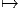M du
fibré considéré), notion générale déjà introduite au chapitre 1. Ici
l’ensemble des antécédents de x ∈ M par π n’est autre que la fibre
au dessus du point x. Un champ de vecteurs V ∈ ΓTP est donc dit
projetable si et seulement si π∗V z = π∗V zg pour tout g ∈ G.
Plusieurs propriétés des espaces fibrés (et des connexions) pourraient
s’enoncer en utilisant cette notion, que nous n’utiliserons pas
explicitement dans la suite.
3.2.7 Exemples
Le fibré des repères linéaires
Nous avons déjà étudié cet exemple en détail en 3.2.3 et nous verrons un peu plus
loin divers exemples analogues.
Fibration d’un groupe G en sous groupes H au dessus de G∕H
- Notre premier exemple sera à la fois élémentaire et discret : notre
espace total P = ℤ est l’ensemble des entiers relatifs et la projection
π est celle qui, à un entier, associe sa classe modulo p (p désignant un
entier quelconque choisi une fois pour toutes). Le groupe structural
est alors le sous-groupe pℤ de ℤ. Illustrons ceci, dans le cas p = 3 par
la figure 3.7
L’espace total ℤ s’écrit donc ici comme réunion de trois fibres. La fibre
type est le groupe additif des multiples de 3, noté 3ℤ et l’espace
des fibres —la base— possède trois points : ℤ∕3ℤ = {0,1,2}
et est un quotient de ℤ. La notation adoptée, pour l’action du
groupe structural sur l’espace total ℤ est ici une notation additive et
non pas une notation multiplicative (mais cela devrait être assez
clair !), ainsi, l’élément 11 de la fibre 2 peut s’obtenir à partir de
l’élément −1 de la même fibre sous l’action de 3ℤ en écrivant
11 = −1 + 3 × 4.
- Après cet exemple discret et extrêmement élémentaire (l’art de
reconsidérer des choses bien connues avec un éclairage différent … !)
passons à un autre exemple, presque aussi élémentaire, mais “continu”.
L’espace total, comme dans l’exemple précédent, est un groupe, ici le
groupe SU(2). Rappelons, que SU(2) est topologiquement identifiable à la
sphère S3. Nous choisissons un sous-groupe U(1), c’est à dire un grand
cercle passant par l’origine et effectuons une décomposition en classes de
SU(2) par rapport à cet U(1) : soit g un élément de SU(2) qui
n’appartienne pas au U(1) choisi, on construit alors l’ensemble
g = gU(1) = {gh|h ∈ U(1)}. Ensuite, on choisit un élément k qui
n’appartienne ni au U(1) choisi, ni à g. On construit alors k = kU(1) et on
continue … On écrit ainsi le groupe SU(2) comme une réunion (infinie)
de classes du type g = gU(1), l’ensemble de ces classes étant par
définition, l’ensemble quotient SU(2)∕U(1) qu’on identifie (voir le
chapitre sur les groupes et espaces homogènes) avec la sphère S2. Le
groupe SU(2) —c’est à dire la sphère S3— peut donc être considéré
comme réunion d’une infinité de cercles S1 paramètrée par la sphère
S2.
Bien évidemment, le groupe U(1) agit, par multiplication à droite, sur
l’espace total SU(2) (dans la construction précédente on a choisi U(1)
comme sous-groupe de SU(2)). Cette fibration en cercles de S3
est souvent utilisée et porte le nom de “fibration de Hopf” (pour
S3).
Avant de généraliser cet exemple, notons que la sphère S3 n’est, en aucun
cas homéomorphe au produit cartésien S2 × S1, ce qui ne l’empêche pas
d’être un fibré en cercles au dessus de S2. En d’autres termes, les deux
espaces fibrés principaux S3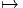S2 et S2 × S1 S2 (avec projection
canonique évidente) ont même structure locale —ils sont tous deux fibrés
en cercles au dessus de S2— mais le second est trivial alors que le premier
ne l’est pas.
S2 (avec projection
canonique évidente) ont même structure locale —ils sont tous deux fibrés
en cercles au dessus de S2— mais le second est trivial alors que le premier
ne l’est pas.
- Passons maintenant à la généralisation de l’exemple qui précède. Soit
G un groupe de Lie et H un sous-groupe de Lie, qu’on supposera fermé
dans G pour que la topologie du quotient soit séparée. On considère
la relation définissant les classes à gauche de H : g et k sont reliés
si k appartient à l’ensemble gH. Il s’agit d’une relation d’équivalence
et on peut écrire G comme réunion de ses classes gH ; l’ensemble des
classes étant, par définition, l’ensemble quotient G∕H. Il est évident
que H agit (à droite) sur G et que l’application G
 G∕H qui, à tout
élément associe sa classe g = gH, définit une fibration principale.
Tout groupe G est donc ainsi un espace fibré principal au dessus de
G∕H, le groupe structural étant H. Notons que l’espace quotient (la
base du fibré) G∕H n’est généralement pas un groupe, à moins que
H ne soit un sous groupe distingué de G, c’est à dire à moins que les
classes à gauche et à droite ne coïncident. La propriété qui précède est
illustrée par la figure 3.9 et est à l’origine d’une multitude d’exemples
que le lecteur pourra construire en utilisant les données “zoologiques”
concernant les groupes de Lie et les espaces homogènes (voir chapitre
précédent).
G∕H qui, à tout
élément associe sa classe g = gH, définit une fibration principale.
Tout groupe G est donc ainsi un espace fibré principal au dessus de
G∕H, le groupe structural étant H. Notons que l’espace quotient (la
base du fibré) G∕H n’est généralement pas un groupe, à moins que
H ne soit un sous groupe distingué de G, c’est à dire à moins que les
classes à gauche et à droite ne coïncident. La propriété qui précède est
illustrée par la figure 3.9 et est à l’origine d’une multitude d’exemples
que le lecteur pourra construire en utilisant les données “zoologiques”
concernant les groupes de Lie et les espaces homogènes (voir chapitre
précédent).
- Indiquons simplement ci-dessous quelques familles de fibrations
principales, basées sur la construction précédente. Nous utilisons la
notation H−→G−→G∕H pour caractériser une telle fibration de G au
dessus de G∕H. Le nom figurant en titre est celui donné à l’espace
quotient.
-
Variétés de Stiefel réelles
-
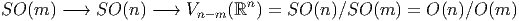
-
Variétés de Stiefel complexes
-
-
Variétés de Stiefel quaternioniques
-
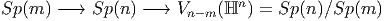
Si x = x0 + ix1 + jx2 + kx3 ∈ ℍ, alors x = x0 − ix1 − jx2 − kx3,
et (x|y) = ∑
xiyi. Comme dans le chapitre précédent, la notation
Sp(n) désigne le groupe de Lie compact simplement connexe
correspondant à la forme réelle compacte de l’algèbre de Lie
complexe Cn. Avec d’autres notations : Sp(n) = U(n, ℍ) =
{u ∈ GL(ℍ)|(u(x)|u(y)) = (x|y). Le groupe symplectique (non
compact) usuel correspondant à la même algèbre de Lie Cn sera
généralement plutôt désigné par la notation Sp(2n, ℝ).
Le cas m = n − 1 mérite une attention particulière puisque nous obtenons
les sphères de cette façon.
Noter que la même sphère peut être obtenue comme base de plusieurs
fibrations différentes de groupes de Lie (trois possibilités si elle est de
dimension 4n − 1, deux possibilités si elle est de dimension 2n − 1 et une
seule possibilité si elle est de dimension paire). Il existe encore quelques
autres possibilités dites “exceptionnelles” et nous y reviendrons plus
loin.
Si nous divisons les groupes orthogonaux O(n) ou SO(n) — ou leurs
analogues complexes ou quaternioniques — par un sous groupe maximal
quelconque, nous obtenons plus généralement les variétés de Grassmann et
les fibrations principales correspondantes :
-
Grassmaniennes réelles orientées
-
-
Grassmaniennes complexes orientées
-
-
Grassmaniennes quaternioniques
-
Les Grassmaniennes non orientées réelles et complexes sont
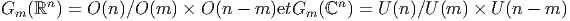
Le cas m = n− 1 mérite également une mention particulière puisque nous
obtenons ainsi les espaces projectifs réels (ℝPn), complexes (ℂPn) et
quaternioniques (ℍPn).
Le lecteur devrait également connaître l’existence des difféomorphismes
exceptionnels suivants : ℂP1 ∼ S2 et ℍP1 ∼ S4. Une remarque sur les
notations : H = S(U(n − 1) × U(1)) désigne un sous groupe maximal de
SU(n) ; on écrit quelquefois SU(n − 1) × U(1) pour désigner ce même
sous groupe H mais une telle notation est un peu abusive puisque H est en
fait en quotient du produit direct de ces deux groupes par un groupe
discret (il ne faut pas compter l’unité deux fois !). Les deux objets ont
bien évidemment la même algèbre de Lie. Une remarque analogue
s’applique au cas symplectique (par ailleurs on se rappelle que Sp(1) et
SU(2) sont isomorphes, ce qui explique l’apparition de ce dernier dans le
tableau précédent).
- Nous venons de voir que G peut être considéré comme espace fibré
principal à droite au dessus de G∕H = {gH|g ∈ G} mais il peut être
également considéré comme fibré principal à gauche au dessus de
H∖G = {Hg|g ∈ G}. L’étude de ce ce cas est évidemment tout à fait
semblable à celle que l’on vient de mener.
- Voici un autre cas particulier de la construction précédente. On part du
groupe G×G (produit direct du groupe G avec lui même). On considère le
sous-groupe diagonal GΔ = {(g,g) ⊂ G × G|g ∈ G} qui est d’ailleurs
isomorphe à G et on fabrique le quotient. En résumé, on a un fibré
principal d’espace total G×G, de fibre type GΔ ∼ G et de base G×G
GΔ ∼ G.
La base est elle-même, en tant que variété, difféomorphe avec G, mais
la structure de groupe ne passe pas au quotient puisque GΔ n’a
aucune raison d’être distingué dans G × G. Posant GL = G × 1 et
GR = 1 × G, on voit qu’on peut écrire G ∼ GLGR∕GΔ. Cet exemple
d’apparence innocent est assez subtil à analyser et pourra servir, dans la
suite, pour discuter de connexions (ou de métriques) particulières
sur les groupes de Lie. On peut aussi considérer les projections
GLGR
 GL ∼ G et GLGR
GL ∼ G et GLGR GR ∼ G qui définissent deux autres
fibrés principaux (cette fois-ci, la structure de groupe passe au
quotient).
GR ∼ G qui définissent deux autres
fibrés principaux (cette fois-ci, la structure de groupe passe au
quotient).
- Finalement, considérons le cas d’un sous groupe G qui n’est pas
simplement connexe. On sait qu’il admet un revêtement universel
simplement connexe
 et que G est isomorphe au groupe quotient
et que G est isomorphe au groupe quotient
 |H où H est un sous groupe discret (distingué) du centre de G
isomorphe au groupe d’homotopie π1(G). On se retrouve donc dans
la situation considérée précédemment d’une fibration de
|H où H est un sous groupe discret (distingué) du centre de G
isomorphe au groupe d’homotopie π1(G). On se retrouve donc dans
la situation considérée précédemment d’une fibration de  au dessus
de G = 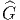|H avec groupe structural (fibre type) H, à ceci près que
le groupe H est ici un groupe discret admettant une interprétation
topologique particulière et que le quotient G est non seulement un
espace homogène, mais est lui-même un groupe. Plus généralement
d’ailleurs, tout sous groupe K ⊂ H ∼ π1(G) définit un revêtement
au dessus
de G = 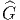|H avec groupe structural (fibre type) H, à ceci près que
le groupe H est ici un groupe discret admettant une interprétation
topologique particulière et que le quotient G est non seulement un
espace homogène, mais est lui-même un groupe. Plus généralement
d’ailleurs, tout sous groupe K ⊂ H ∼ π1(G) définit un revêtement
 ∕K qui est un fibré principal au dessus de G =
∕K qui est un fibré principal au dessus de G =  ∕H avec fibres
H|K (c’est bien un groupe puisque H est abélien) ; ce revêtement
n’est pas universel puisque son π1 est égal à K. Tout ceci est presque
intuitif si on se représente ces fibrations par des figures telles que 3.10.
∕H avec fibres
H|K (c’est bien un groupe puisque H est abélien) ; ce revêtement
n’est pas universel puisque son π1 est égal à K. Tout ceci est presque
intuitif si on se représente ces fibrations par des figures telles que 3.10.
Fibration d’un espace homogène G∕H1 en groupes H2 au dessus de
G∕(H1 × H2)
Soit H un sous groupe de Lie d’un groupe de Lie G et supposons que H soit
isomorphe au produit H1 × H2 de deux groupes de Lie. On peut alors considérer
H1 (en fait H1 × Identité) comme sous groupe de G et on a une projection
G∕H1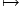G∕(H1 × H2) de fibre H2. L’action de H2 (à droite) sur G∕H1 est bien
définie car H1 et H2 commutent, et donc (gH1)h2 = (gh2)H1 lorsque h2
appartient à H2. Vu la diversité des cas à considérer nous n’énoncerons aucun
résultat précis dans ce cas. Néanmoins nous énoncerons les trois remarques
suivantes :
- “En général” la situation précédente conduit à un fibré principal
H2−→G∕H1−→G∕(H1 × H2) de groupe structural H2.
- Bien souvent, et en particulier lorsque G est un groupe simple, le sous
groupe H considéré n’est pas isomorphe au produit H1 ×H2 de deux
groupes de Lie, mais au quotient d’un tel produit par un groupe discret
(on a donc LieH = LieH1 ⊕ LieH2 au niveau des algèbres de Lie).
Dans ce cas, le résultat “général” précédent est valable à condition
de quotienter correctement par le groupe discret approprié.
- Le lecteur pourrait être également tenté de considérer des doubles
classes K∖G∕H où H et K sont deux sous groupes de G. Attention :
la projection G∕H
 K∖G∕H ne définit en général pas une fibration
principale, ni même une fibration, car le type topologique des fibres
(ou même la cardinalité) peut varier d’un point à l’autre de la base.
K∖G∕H ne définit en général pas une fibration
principale, ni même une fibration, car le type topologique des fibres
(ou même la cardinalité) peut varier d’un point à l’autre de la base.
Afin de conclure cette sous section consacrée aux exemples par un théorème
précis concernant les fibrations principales d’espaces homogènes, nous considérons
maintenant le cas suivant.
Fibration principale de G∕H en groupes N|H au dessus de G∕N, N étant le
normalisateur de H dans G
Soit H un sous groupe de Lie du groupe de Lie G et soit N son normalisateur
dans G. On rappelle que N = {n ∈ G|nH = Hn} ;end’autrestermes, N est le
plus grand sous groupe de G dans lequel H est un sous groupe normal (on dit
aussi sous groupe distingué). H étant normal dans N, il s’ensuit que les classes à
gauche et à droite de N par rapport à H coïncident (voir ci-dessus la définition
de N) et que l’espace homogène N|H = N∕H = H∖N possède une structure de
groupe. Par ailleurs, N agit à droite sur G∕H : soit gH ∈ G∕H et n ∈ N ;
alors gHn = gnH ∈ G∕H. Cette action n’est pas fidèle car les éléments de H
lui-même n’agissent pas : si h ∈ H, alors gHh = gH. Le fait de quotienter
N par H rend précisément cette action fidèle. On peut se représenter
les actions de G à gauche de G∕H et de N|H, à droite de G∕H par le
schéma :
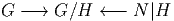
En
utilisant seulement l’action à droite, on obtient ainsi une fibration principale dont
l’espace total est G∕H et le groupe structural est N|H, il est facile de voir
que la base de la fibration est l’espace homogène G∕N (voir figure 3.11).
Ce type de fibration principale est également à l’origine d’une multitude
d’exemples. Les fibrations de Hopf des sphères au dessus des espaces projectifs
réels, complexes ou quaternioniques sont d’ailleurs de ce type. En effet, on
a
| G = SO(n) | H = SO(n − 1) | N = SO(n − 1) × ℤ2 | N|H = ℤ2 |
| |
| G = SU(n) | H = SU(n − 1) | N = SU(n − 1) × U(1) | N|H = U(1) |
| |
| G = Sp(n) | H = Sp(n − 1) | N = Sp(n − 1) × SU(2) | N|H = SU(2) |
| |
et on peut illustrer les fibrations correspondantes par la figure 3.12
On se souvient aussi que Z2 ≡ S0, U(1) ≡ S1 et SU(2) ≡ S3 ; ainsi les trois
fibres types représentées sur la figure 3.12 sont non seulement des groupes, mais
aussi des sphères.
Le lecteur pourra fabriquer aisément d’autres exemples de ce type en
choisissant, pour tout groupe G donné, un sous groupe H qui ne soit pas trop
“gros” (de façon à ce que N|H ne soit pas trop trivial). Voici un dernier exemple
de ce type qui utilise les groupes de Lie exceptionnels : G = E8, H = E6 ,
N = (E6 × SU(3))∕ℤ3, N|H = SU(3)∕ℤ3.
Fibrations exceptionnelles des sphères et des espaces projectifs
Il existe des fibrations exceptionnelles des sphères et des espaces projectifs qui
ne sont pas liées aux inclusions de groupes unitaires, orthogonaux ou
symplectiques (forme compacte) c’est à dire aux structures réelles, complexes ou
quaternioniques. Certaines de ces fibrations sont liées à l’existence de
l’“algèbre” non-associative des octaves de Cayley O (octonions). On sait que
pour n = 1, 2, 4, 8 (et ce sont les seules valeurs possibles), il existe une
opération bilinéaire ℝn × ℝn ℝn sans diviseurs de zéro (c’est à dire que
a × b = 0 ⇒a = 0oub = 0), conduisant à la définition des corps ℝ, ℂ, ℍ et des
octaves O.
ℝn sans diviseurs de zéro (c’est à dire que
a × b = 0 ⇒a = 0oub = 0), conduisant à la définition des corps ℝ, ℂ, ℍ et des
octaves O.
Certaines des fibrations mentionnées ici ne sont pas des fibrations principales
(en particulier la fibre type n’est pas un groupe) mais elles y ressemblent
beaucoup (on sait que la sphère S7, par exemple, est presque un groupe…) Nous
donnons ici une liste de fibrations qui sont à la fois intéressantes et célèbres (la
fibration de Hopf exceptionnelle de S15 !) bien qu’elles ne s’inscrivent pas
logiquement toutes dans cette section puisqu’il ne s’agit pas toujours de fibrations
principales. Nous ne les utiliserons pas dans la suite et ne les mentionnons que
pour des raisons culturelles, en espérant que le lecteur pourra y retourner (soit-dit
en passant, il reste à étudier de nombreux problèmes intéressants concernant ces
objets).
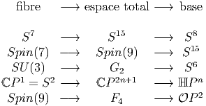
3.3 Fibrés associés
3.3.1 Introduction
Comme nous l’avons vu précédemment, à une variété différentiable donnée, on
peut attacher l’ensemble de tous les repères, et cet ensemble, qu’on désigne sous
le nom de fibré des repères possède une structure d’espace fibré principal. Il est
d’autres ensembles qu’on peut attacher à une variété donnée, par exemple,
l’ensemble de tous ses vecteurs tangents, ou l’ensemble de tous ses tenseurs de
type donné. Ces différents ensembles sont, d’une façon que nous allons rendre
précise, “associés” au fibré des repères, en ce sens que le groupe structural — le
groupe linéaire dans ce cas — agit également sur les composantes des vecteurs,
tenseurs etc
Plus généralement, nous allons définir des fibrés associés en “remplaçant” le
groupe structural d’un fibré principal par un ensemble sur lequel ce groupe opère.
D’un certain point de vue, on peut dire que les groupes eux-mêmes n’ont un
intérêt que parce qu’ils agissent (opèrent) sur des ensembles bien choisis et cette
théorie des actions de groupe — que nous avons sommairement décrite
dans la deuxième partie de cet ouvrage — est particulièrement riche
lorsqu’il s’agit d’une action linéaire sur un espace vectoriel (théorie des
représentations). Les groupes sont donc des “machines à agir sur des
espaces”. D’une façon analogue, nous allons considérer les fibrés principaux
comme des “machines à fabriquer des fibrés associés” et la théorie sera
particulièrement riche lorsque ces fibrés associés seront fabriqués à l’aide
d’une représentation de groupe sur un espace vectoriel (théorie des fibrés
vectoriels).
3.3.2 Espaces fibrés associés généraux
Soit P M un espace fibré principal (à droite), de groupe structural G, et
soit ρ une action (à gauche) de G sur un ensemble F. On obtient alors
une relation d’équivalence sur P × F en disant que (z,f) ∈ P × F est
équivalent à (z′,f′) ∈ P × F s’il existe un élément g de G qui soit tel
que z′ = zg et f′ = ρ(g−1)f. L’ensemble quotient E = P ×
GF prend le
nom de fibré associé à P via l’action de G sur F. En d’autres termes, on
identifie (z,f) avec (zg,ρ(g−1f)). Cette définition un peu abstraite ne
devrait pas rebuter le lecteur, en effet elle correspond à une situation
bien connue : supposons l’action ρ fixée une fois pour toutes et notons
g−1f l’objet que nous notions un peu plus haut ρ(g−1)f ; par ailleurs,
désignons par z.f la classe de (z,f) ; l’élément u = z.f de E n’est donc rien
d’autre que l’objet géométrique qui possède les “composantes” f dans
le “repère” z et les “composantes” g−1.f dans le “repère” zg, en effet,
u = z.f = zg.g−1f. On voit donc ici que u généralise la notion classique
et élémentaire de “vecteur”. Nous verrons un peu plus loin comment
récupérer la notion déjà introduite de vecteur tangent à une variété par cette
construction.
M un espace fibré principal (à droite), de groupe structural G, et
soit ρ une action (à gauche) de G sur un ensemble F. On obtient alors
une relation d’équivalence sur P × F en disant que (z,f) ∈ P × F est
équivalent à (z′,f′) ∈ P × F s’il existe un élément g de G qui soit tel
que z′ = zg et f′ = ρ(g−1)f. L’ensemble quotient E = P ×
GF prend le
nom de fibré associé à P via l’action de G sur F. En d’autres termes, on
identifie (z,f) avec (zg,ρ(g−1f)). Cette définition un peu abstraite ne
devrait pas rebuter le lecteur, en effet elle correspond à une situation
bien connue : supposons l’action ρ fixée une fois pour toutes et notons
g−1f l’objet que nous notions un peu plus haut ρ(g−1)f ; par ailleurs,
désignons par z.f la classe de (z,f) ; l’élément u = z.f de E n’est donc rien
d’autre que l’objet géométrique qui possède les “composantes” f dans
le “repère” z et les “composantes” g−1.f dans le “repère” zg, en effet,
u = z.f = zg.g−1f. On voit donc ici que u généralise la notion classique
et élémentaire de “vecteur”. Nous verrons un peu plus loin comment
récupérer la notion déjà introduite de vecteur tangent à une variété par cette
construction.
L’espace E est bien un espace fibré et on a une projection, encore notée π, de
E sur M, définie par π(z.f) = π(z) où le π du membre de droite se réfère à la
projection dans le fibré principal correspondant. Il est bien clair que cette
définition ne dépend pas du choix du représentant choisi (puisque les
différents z possibles sont tous dans la même fibre !) On se souvient, par
ailleurs, qu’il est parfaitement légitime et non ambigu de noter le point
x = π(z) de M sous la forme x = zG puisqu’il existe une correspondance
bi-univoque entre points de M et fibres de P. Par ailleurs, la fibre de la
nouvelle projection π (dans E) étant, par construction, homéomorphe à F,
on a donc, de fait, “remplacé” G par F, ce qui justifie de représenter
cette construction, associant E à P, par la figure suivante (fig. 3.13) :
On dit que G est le groupe structural du fibré associé E (attention, dans le cas
des fibrés associés, le groupe structural G n’a aucune raison d’être difféomorphe à
la fibre type F). Notons enfin que dimE = dimM + dimF.
Avant de donner quelques exemples de tels espaces, il importe de noter que,
sauf exceptions, le groupe structural G n’agit pas sur le fibré associé E puisque E
est précisément obtenu via un quotient de l’action simultanée de G sur P (c’est à
dire sur les “repères”) et sur F (c’est à dire les “composantes”).
Une situation familière, bien connue du lecteur, nous est fournie par l’exemple
des espaces vectoriels :
Soit E un espace vectoriel de dimension n ; les éléments de E sont nos
vecteurs familiers ; il faut bien voir que le groupe linéaire GL(n, ℝ), défini
comme groupe de matrices, ne sait pas comment agir sur les vecteurs si aucune
base n’a été choisie. Par contre, il sait agir sur les bases de E (il fait passer d’une
base à l’autre) et, une base étant choisie, il sait également agir sur les
composantes des vecteurs de E. Il existe bien un groupe qui sait agir sur les
vecteurs eux-mêmes, c’est le groupe AutE des automorphismes de E, mais ce
groupe ne peut s’identifier à GL(n,, ℝ) que moyennant le choix d’une
base. Un espace vectoriel usuel n’est autre chose qu’un espace fibré sur
un point (la base est un point et la fibre s’identifie à l’espace vectoriel
lui-même). Après quelques moments de réflexion passés à examiner ce cas assez
trivial, mais instructif, le lecteur pourra sans doute se demander quel est
l’objet généralisant AutE lorsqu’on passe de la situation bien connue
évoquée ci-dessus au cas des espaces fibrés plus généraux où la base
est, en général, une variété. Il se trouve que ce groupe AutE admet une
généralisation, c’est à dire qu’il existe bien un groupe qui agit sur E :
c’est un objet désigné sous le nom de groupe de jauge et son étude fera
l’objet de la section 3.6.2. Nous verrons qu’il est, en général, de dimension
infinie.
Une des conclusions que nous voulons tirer de la présente discussion est la
suivante : le groupe structural G d’un fibré associé n’agit pas sur l’espace fibré
associé en question ; il y a bien un groupe AutE qui agit sur E, mais ce groupe
ne coïncide pas avec G.
3.3.3 Espaces fibrés en espaces homogènes, associés à un fibré principal de
groupe structural G
Soit P = P(M,G) un fibré principal et H un sous groupe de Lie du groupe
structural G. On considère l’action à gauche de G sur l’espace homogène
F = G∕H et on construit, en suivant la méthode de construction générale des
fibrés associés, l’ensemble E = P ×GG∕H. Les fibres de E sont difféomorphes à
l’espace homogènes G∕H et la base est toujours M. La dimension de E est donc
égale à dimM + dimG∕H = dimM + dimG − dimH et on peut représenter E à
l’aide de la figure suivante (fig. 3.14) :
On peut noter E = PmodH ou simplement E = P∕H.
A l’aide de cette méthode générale et des exemples de fibrés principaux
donnés précédemment, on peut ainsi fabriquer une foule de nouveaux espaces. En
voici quelques exemples :
3.3.4 Fibration principale relative à un fibré quotient
La figure ci-dessous (3.16), le fait que dimP = dimE + dimH et le fait que G soit
lui-même un H-fibré principal au dessus de G∕H, suggèrent que l’espace total P
du fibré principal P(M,G) dont on est parti peut également être considéré
comme fibré principal P(E,H) de fibre H au-dessus du fibré associé
E = P ×GG∕H. Il en est effectivement ainsi.
Soit z ∈ P(M,G), on considère l’application p : P E = P ×GG∕H = PmodH
définie par p(z) = (z,eH), où e désigne l’élément neutre du groupe G. La fibre
passant par z de cette application est simplement zH puisque
E = P ×GG∕H = PmodH
définie par p(z) = (z,eH), où e désigne l’élément neutre du groupe G. La fibre
passant par z de cette application est simplement zH puisque
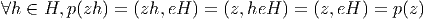
On
obtient donc ainsi un nouveau fibré principal Q(E,H) possédant le même espace
total que P(M,G) mais cette fois-ci avec une base E = PmodH et un groupe
structural H. Pour tout choix d’un sous groupe H de G, on obtient ainsi une
deuxième fibration principale de l’espace P représentée par la figure (3.16).
3.3.5 Espaces fibrés en … espaces fibrés
Voici une famille d’exemples assez surprenante : on se donne P1 = P1(M1,G) et
P2(M2,G), deux espaces fibrés principaux possédant le même groupe structural.
On supposera, de plus, que P1 est un espace fibré à droite —comme d’habitude—
mais que P2 est un espace fibré à gauche, ce qui n’est pas vraiment une
restriction puisqu’on peut toujours passer d’une action à droite à une
action à gauche (voir le chapitre sur les actions de groupes). On va alors
fabriquer un fibré associé en choisissant P = P1, F = P2 et en suivant la
méthode générale de construction des fibrés associés. On obtient ainsi
un espace E = P1 ×GP2 dont la base est M1 et dont la fibre type est
P2.
Voici un exemple de cette construction. Soit P1 = G = P1(G∕H,H),
un groupe de Lie fibré en sous groupes de type H au dessus de G∕H et
P2 = K = P2(H∖K,H), un autre groupe de Lie fibré en sous groupe de type H
au dessus de H∖K ; on fabrique alors E = G ×HK qui a pour base G∕H et
pour fibre type K. Une situation encore plus particulière correspond au choix
G = K.
3.3.6 Le fibré adjoint E = AdP
Soit P = P(M,G) un fibré principal. On peut faire agir G sur lui-même via
l’action adjointe g ∈ G,Ad(g)k = gkg−1. On choisit alors F = G, ρ = Ad, et on
construit E = P ×AdG, fibré noté habituellement AdP. Cet espace fibré
associé a ceci de particulier que sa fibre type est un groupe de Lie —c’est le
groupe structural lui-même— et donc, au niveau du “dessin”, rien ne le
distingue de P, puisqu’ils ont tous deux même base M et même fibre
type G. En revanche, G opère, comme il se doit, sur le fibré principal P,
alors qu’il ne sait pas agir sur AdP. Cet exemple illustre bien la nécessité
d’imposer la condition 2 dans la définition des fibrés principaux (voir
section 3.2.1). A tout fibré principal P, on peut donc associer un fibré
en groupes AdP, dont l’importance s’avérera essentielle (nous verrons
plus tard que les sections de AdP sont les transformations de jauge) .
Notons pour terminer que G agit non seulement sur lui-même par l’action
adjointe Ad mais aussi sur Lie(G) par l’action adjointe ad définie par
ad(g)X = gXg−1, où X appartient à l’algèbre de Lie de G. La construction
générale peut encore être effectuée dans ce cas, et on fabrique ainsi le fibré
associé adP = P ×GLie(G) qui est un fibré en algèbres de Lie, de base
M.
3.3.7 Le rôle du normalisateur
- On vient de construire un nouvel espace fibré en faisant agir G sur
lui-même par l’action adjointe. On pourrait se demander pourquoi ne
pas faire tout simplement agir G sur lui-même par multiplications à
gauche, et fabriquer le fibré associé correspondant. Bien sur, on le
peut, mais alors, on n’obtient ainsi rien de neuf ! En effet, partons de
P = P(M,G), fibré principal ( à droite) et construisons E = P ×GG
via l’action (multiplication) à gauche de G sur G. La prise du quotient
identifie ces deux actions —à droite de P et à gauche de G— et
ces deux actions s’annihilent donc mutuellement (voir la remarque en
fin de section 3.3.2). Par contre, il existe encore une action de G à
droite de la fibre F = G, de sorte que l’espace obtenu E s’identifie
canoniquement à P lui-même. La construction n’offre donc aucun
intérêt.
- Dans le cas de fibrations en espaces homogènes du type E = P ×
GG∕H, nous avons vu que l’action de G disparaissait, en général, au
niveau de E. L’exemple qui précède (où H se déduit à l’identité)
offre un bon contre-exemple, mais il s’agit là d’une situation un
peu extrême… On pourrait se demander s’il existe des situations
intermédiaires, c’est à dire des situations où il existe encore une
certaine action à droite au niveau du fibré associé E. La réponse est
simple et a déjà été trouvée dans notre étude succincte des espaces
homogènes des groupes de Lie : l’espace G∕H est toujours muni
d’une action de G évidente, du côté gauche, mais également d’une
action à droite du groupe N|H où N désigne le normalisateur de H
dans G ; en effet, on peut écrire (gH)n = (gn)H si n est un élément
de N. Schématiquement, on a
Le groupe N|H agit donc toujours, à droite, sur l’espace fibré E =
P ×GG∕H. Bien souvent, ce groupe N|H est discret, mais il peut ne
pas l’être. On a également le cas extrême où N et G coïncident ;
dans un tel cas, H est sous groupe distingué de G, l’espace homogène
G∕H est un groupe, et E, muni de cette action à droite, devient un
fibré principal. Dans le cas général où N et G sont distincts, et où H
n’est pas trivial, il faut se rappeler (voir section 3.2.7) que G∕H est
lui même un N|H fibré principal au dessus de G∕N ; on fabrique
ainsi une projection de E sur M ×G∕N et E peut alors être considéré
comme N|H fibré principal au dessus de M × G∕N.
3.3.8 Les espaces fibrés vectoriels
“A tout seigneur, tout honneur”, voici les espaces fibrés vectoriels, espaces qui
tiennent une place de choix dans la théorie des espaces fibrés, et dont l’étude
peut se faire (et se fait souvent) de façon indépendante de la notion de
fibré principal. Dans notre approche, cependant, les fibrés vectoriels sont
des espaces fibrés associés comme les autres, à cette différence près que
la fibre F choisie est un espace vectoriel (ℝn ou ℂn) et que l’action ρ
de G sur F est une représentation de G sur cet espace vectoriel. Nous
devons donc nous répéter : soit P = P(M,G) un fibré vectoriel et ρ une
représentation de G sur l’espace vectoriel F ; on construit le fibré vectoriel
E = P ×GF. Les éléments 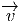 de E sont vraiment ici des “vecteurs”
(gardons la flèche pour le moment) et on pourra sans danger —et avec
profit— utiliser une notation “avec des indices”. Comme on l’a vu en
section 3.3.2, l’élément  de E peut s’écrire
de E peut s’écrire  = (ϵ).(v) = (ϵg).(ρ(g−1v)),
avec ϵ ∈ P et v ∈ F, ce qui se lit “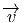 possède les composantes (v) dans
le repère (ϵ) et les composantes (ρ(g−1v)) dans le repère (ϵg)”. Si on
introduit des indices, on écrira
= (ϵ).(v) = (ϵg).(ρ(g−1v)),
avec ϵ ∈ P et v ∈ F, ce qui se lit “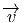 possède les composantes (v) dans
le repère (ϵ) et les composantes (ρ(g−1v)) dans le repère (ϵg)”. Si on
introduit des indices, on écrira  = ϵivi où les vi sont des nombres réels ou
complexes et où {ϵi} désigne un élément de P, c’est à dire un repère
généralisé au point x, repère qui peut, dans les cas simples (cas où ρ
désigne une représentation fondamentale de G, par exemple) être considéré
comme base de la fibre au point x. Schématiquement, on a la figure 3.17
= ϵivi où les vi sont des nombres réels ou
complexes et où {ϵi} désigne un élément de P, c’est à dire un repère
généralisé au point x, repère qui peut, dans les cas simples (cas où ρ
désigne une représentation fondamentale de G, par exemple) être considéré
comme base de la fibre au point x. Schématiquement, on a la figure 3.17
Le fibré vectoriel est dit réel ou complexe suivant que F = ℝn ou ℂn et on
pourra écrire E = E(M,F). Le lecteur aura deviné que la notation utilisée ici
permet de nommer la base, la fibre et l’espace total correspondant.
L’exemple fondamental est celui fourni par le fibré tangent à une variété M.
Nous avons déjà défini cet espace de façon élémentaire au premier chapitre. Il
s’introduit ici de façon parfaitement naturelle : Soit P = FM le fibré principal
des repères linéaires sur M ; le groupe structural est G = GL(m, ℝ) avec
m = dimM. On considère la représentation fondamentale de G sur ℝm et on
construit le fibré tangent TM = FM ×GL(m,ℝ)ℝm comme fibré associé à FM.
Les éléments de TM sont, par définition, des vecteurs tangents qu’on
note v = ϵμ.vμ, où ϵ
μ désigne un élément de FM, c’est à dire aussi une
base de T(M,x), l’espace tangent en x, c’est à dire la fibre de TM au
dessus de x ∈ M. On décide également de ne plus mettre de flèche sur les
vecteurs. Noter que nous écrivons les composantes vμ de v à droite de
la base ϵμ de façon à rester compatible avec la notation générale que
nous avons introduite précédemment pour les espaces fibrés associés. Soit
Λ = (Λμν) une matrice de GL(m, ℝ), on retrouve alors la propriété bien
connue

Les tenseurs contravariants et covariants de tous ordres, qui ne sont autres que
les éléments de (TM)⊗p ⊗(T∗M)⊗q déjà introduits au premier chapitre
s’interprètent ici comme des éléments des espaces fibrés vectoriels FM ×GF où
F désigne la puissance tensorielle appropriée de ℝm et où GL(m, ℝ) agit sur F
par la représentation tensorielle correspondante.
Les exemples qui précèdent sont d’une utilisation courante en physique de
l’espace-temps (théorie de la gravitation) mais il faut bien voir qu’il n’y a pas
grande différence conceptuelle entre vecteurs de l’espace temps et … quarks ! En
effet, en théorie des interactions fortes, par exemple, on considère un fibré
principal P de groupe structural SU(3) au dessus de l’espace-temps M, on choisit
alors l’action de SU(3) sur ℂ3 et on construit le fibré vectoriel associé
P ×SU(3)ℂ3 ; un quark au point x est alors décrit par un élément de ce
fibré vectoriel. Nous reviendrons plus loin sur ces exemples utilisés en
physique.
3.3.9 Trivialité des fibrés vectoriels, variétés parallélisables
Revenons un peu sur la notion de trivialité déjà étudiée, dans le cas des fibrés
principaux, en section 3.2.5. On se souvient qu’une condition nécessaire et
suffisante, pour assurer la trivialité d’un fibré principal P, est l’existence d’une
section globale. Contrairement au cas des fibrés principaux, l’existence, pour un
fibré vectoriel, de sections globales, est une propriété évidente : tout
fibré vectoriel, trivial ou non, possède des sections globales, par exemple
la section nulle. Ce n’est donc pas ainsi qu’on détecte la trivialité. Par
contre, nous avons vu que, d’une certaine façon, on pouvait considérer un
élément du fibré principal P comme une base dans une certaine fibre du
fibré associé E. L’existence pour P d’une section globale équivaut donc,
pour E, à l’existence de n sections indépendantes en tout point de M
(n désignant ici la dimension de la fibre type). On dit qu’une variété
est parallélisable si son fibré tangent est trivial. De façon générale, les
groupes de Lie sont des variétés parallélisables. En effet la donnée d’une
base dans l’algèbre de Lie g du groupe G détermine n = dim(G) champs
de vecteurs indépendants en tous points de G (les champs invariants à
gauche associés). On voit ainsi que le fibré tangent TG possède n sections
indépendantes (il est donc trivial), et que, ce qui revient au même, le
fibré principal FG (le fibré principal des repères sur la variété G, fibré
dont le groupe structural est GL(n)) possède une section globale. Les
groupes ne sont pas les seules variétés parallélisables ; l’exemple le plus
célèbre de variété ne possédant pas de structure de groupe mais étant
néanmoins parallélisable est sans doute celui de la sphère S7 (seules les sphères
S0, S1 et S3 possèdent une structure de groupe). La démonstration de
cette propriété repose sur l’utilisation du produit de Cayley dans R8
(l’“algèbre” des octonions). Les sphères Sn de dimension n = 0, 1, 3, 7 sont
les seules sphères à être parallélisables. Signalons sans démonstration
quelques autres exemples de variétés parallélisables : les variétés de Stiefel
complexes SU(n)∕SU(k) (en excluant les sphères, c’est à dire en supposant
k≠n − 1), les espaces homogènes qui sont des quotients de SU(n) par
des sous-groupes du type SU(2) ×… × SU(2) (à condition d’exclure une
seule exception, la sphère S5 = SU(3)∕SU(2)), les quotients du type
Sp(n)∕SU(2), l’espace homogène SU(4)∕H où H est le sous-groupe de
SU(4) isomorphe à SU(2) constitué des matrices du type  , avec
A ∈ SU(2).
, avec
A ∈ SU(2).
3.3.10 Sections de fibrés associés et champs
- Soit P = P(M,G) un fibré principal et E = E(M,F) un fibré
associé . Nous savons ce qu’est une section σ d’un espace fibré, à
savoir une application différentiable de M dans P, ou dans E, telle
que πoσ soit l’identité de M, π désignant la projection du fibré
correspondant. L’ensemble des sections globales est quelquefois vide
(cas des fibrés principaux non triviaux) mais on sait qu’un fibré
vectoriel admet de nombreuses sections globales. Soit ΓE l’ensemble de
ces sections. Dans le cas où E est le fibré tangent TM d’une variété, il
est évident qu’une section n’est autre qu’un champ de vecteurs ; de la
même façon, les champs de tenseurs d’ordre supérieur sont également
des sections de fibrés vectoriels appropriés.
- En physique, les champs de matière classiques sont toujours décrits
par des sections de fibrés associés (le mot “classique” signifiant ici
qu’on fait allusion aux théories de champs classiques et non aux
théories de champs quantiques). C’est ainsi qu’un champ de quarks,
par exemple, est une section d’un fibré à fibres ℂ3, mentionné au
paragraphe précédent, et que les champs de matière des “modèles σ
non linéaires” sont des sections de fibrés en espaces homogènes. Pour
cette raison, on dira quelquefois champ de matière au lieu de “section
de fibré associé”. L’ensemble ΓE est donc l’espace des champs de
matière caractérisé par le fibré E = E(M,F).
- ll existe au moins quatre descriptions possibles d’un tel champ de
matière ; illustrons ces quatre descriptions dans le cas des champs de
vecteurs.
- On peut considérer x ∈ M → v(x) ∈ E comme une section de E
(cf. supra) et on écrit
 (x) = ϵμ(x).vμ(x).
(x) = ϵμ(x).vμ(x).
- On peut considérer v (laissons tomber les flèches !) comme une
application de P dans F (et non plus de M dans E) qui,
au repère ϵ = (ϵμ), un élément de P, associe le n-uplet de
composantes vμ (un élément de F). Ce point de vue redonne (au
deuxième degré !) un sens intrinsèque à la notation “avec des
indices”. Cette application de P dans F n’est pas quelconque,
elle est équivariante. En effet, si le repère (ϵμ) a pour image
vμ, il faut que le repère (ϵ
μ)g ait pour image ρ(g−1)vμ. Ici g
et ρ désignent respectivement un élément du groupe structural
et la représentation définissant le fibré associé. Il existe une
correspondance bijective entre l’ensemble des sections d’un fibré
associé E = E(M,F) et l’ensemble des applications équivariantes
du fibré principal correspondant P dans la fibre type F. On peut
donc identifier ΓE = Ω0(M,E) avec l’ensemble des applications
de P dans F qui sont équivariantes, c’est à dire Ωρ0(P,F). Cette
identification se généralise au cas des p-formes sur M à valeurs
dans les sections de E : Ωp(M,E) ∼ Ω
ρp(P,F).
- On peut évidemment fixer —tout au moins localement— une
section de P, c’est à dire choisir un “repère mobile” et caractériser
v(x) par ses composantes dans le repère choisi. C’est cette méthode
qui est la plus utilisée dans les calculs pratiques (on ne regarde
que vμ(x)) mais il faut alors se rappeler qu’on a effectué un choix
et que ce choix est d’ordinaire local.
- Les trois descriptions ci-dessus suffisent généralement à discuter le
cas de la “géométrie commutative” (la géométrie tout court ?)
ou de son pendant physique, la théorie classique des champs. Cela
dit, dans le cas des espaces fibrés vectoriels, il existe une quatrième
description que nous n’aurons pas le loisir de discuter plus avant
mais qui se généralise parfaitement au cas de le géométrie non
commutative. La voici. On sait que l’ensemble des fonctions sur M
constitue une algèbre (commutative) ; soit v un élément de ΓE
(un champ de matière) et soit f une fonction sur la base, alors, il
est bien évident que fv est encore un élément de ΓE. En d’autres
termes, les champs de matière —les sections de E— constituent
un module sur l’algèbre des fonctions sur M (il s’agit même d’un
bimodule puisque l’algèbre des fonctions sur M est commutative
et d’un bimodule particulier puisque les deux actions à droite et à
gauche coïncident).
3.4 Changement de groupe structural dans les fibrés principaux :
élargissement et réduction
3.4.1 Définitions
On considère la situation où nous avons deux fibrés principaux Q(M,H) et
P(M,G) avec H ⊂ G et f, un difféomorphisme de Q sur f(Q) ⊂ P tel que
∀z ∈ Q,∀s ∈ H,f(zs) = f(z)s. En pratique il s’agira souvent d’une inclusion
Q ⊂ P, f n’étant autre que l’identité.
Dans une telle situation, on dit que P est un élargissement (ou un
prolongement) de Q et que Q est une réduction de P.
Comme nous allons le voir, il est toujours possible d’élargir mais il n’est pas
nécessairement possible de réduire.
3.4.2 Elargissement (passage de H à G avec H ⊂ G)
Soit Q = Q(M,H) un fibré principal. On veut “agrandir” le fibré Q sans modifier
la base M mais en agrandissant la fibre, c’est à dire en remplaçant le groupe de
Lie H par un groupe G “plus grand”. La construction est la suivante : on se
choisit un groupe de Lie G tel que H ⊂ G et on construit le fibré P associé à Q
défini par P = Q ×HG où H agit sur G par multiplication à gauche. Les
actions de H à droite de Q et à gauche de G s’annihilent, mais il est
évident que l’espace P = P(M,G) est un G-fibré principal puisque G agit à
droite de P via (z.k)k′ = z.kk′, avec z ∈ Q et k,k′∈ G. Par ailleurs, le
difféomorphisme de Q sur f(Q) recherché est défini, pour z ∈ Q, par
f(z) = z.e (e désignant l’élément neutre de G) et on notera simplement
f(z) = z.
En conclusion, le passage de Q(M,H) à P(M,G) avec H ⊂ G est toujours
possible. On dit que P est obtenu à partir de Q par élargissement du groupe
structural et que Q lui-même est une réduction de P. Notons que les
représentations de G sont toujours des représentations de H, mais que le contraire
n’est pas nécessairement vrai (ainsi, il faut, en général, prendre la somme directe
de plusieurs représentations de H pour construire une représentation de G) ; les
fibrés associés à Q ne sont donc pas forcément toujours des fibrés associés à un
élargissement P.
3.4.3 Réduction (passage de G à H avec H ⊂ G)
-
Méthode
-
Soit P = P(M,G) un fibré principal. On veut diminuer la taille de
P sans modifier la base M mais en “raccourcissant” la fibre, c’est à
dire en remplaçant G par un groupe “plus petit”. En d’autres termes,
si on considère les éléments de P comme des repères généralisés, on
veut s’intéresser uniquement à une sous-classe particulière de repères,
sous-classe qui soit stable sous l’action d’un sous-groupe H de G. La
méthode du paragraphe précédent ne s’applique pas car le groupe
H(⊂ G) n’est pas stable lorsqu’on le multiplie à gauche par des
éléments de G.
Enonçons (et retenons) le résultat suivant que nous démontrerons un
peu plus bas :
Le choix d’une réduction du fibré principal P = P(M,G) à un
sous-fibré Q = Q(M,H) de groupe structural H, lorsqu’il existe, n’est
pas en général unique, et est caractérisé par le choix d’une section
globale dans un fibré en espaces homogènes associé à P, en l’occurrence
le fibré associé P ×GG∕H.
Ce théorème est d’une importance fondamentale car il permet, comme
nous allons le voir, de donner un sens précis à l’idée intuitive de “choix
d’une géométrie” pour la variété différentiable M.
Preuve. Soit σ une section globale de E = PmodH. Un théorème
précédemment discuté (voir les diverses manières de considérer les
sections de fibré associé) nous dit qu’on peut associer à σ une
application  du fibré principal P dans la fibre type G∕H, qui soit
équivariante (
du fibré principal P dans la fibre type G∕H, qui soit
équivariante ( (ys) = s−1
(ys) = s−1 (y)). Définissons Q =
(y)). Définissons Q =  −1(eH) ⊂ P.
La projection π : Q
−1(eH) ⊂ P.
La projection π : Q M n’est autre, par définition, que la restriction
à Q de la projection π de P. Considérons deux points y1 et y2 de la
même fibre de Q, c’est à dire π(y1) = π(y2) ; nous savons qu’il existe
s ∈ Gtel quey2 = y1s. Nous allons montrer qu’en fait, cet élément s
appartient au sous-groupe H. En effet,
M n’est autre, par définition, que la restriction
à Q de la projection π de P. Considérons deux points y1 et y2 de la
même fibre de Q, c’est à dire π(y1) = π(y2) ; nous savons qu’il existe
s ∈ Gtel quey2 = y1s. Nous allons montrer qu’en fait, cet élément s
appartient au sous-groupe H. En effet,
mais  (y2) = 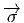(y1s) = s−1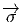(y
1) et donc, eH = s−1(eH), ce qui
montre que s ∈ H. Ainsi Q ⊂ P est un fibré principal de groupe
structural H.
Réciproquement, donnons nous H ⊂ G et une réduction Q =
Q(M,H) ⊂ P = P(M,G). Définissons
(y2) = 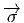(y1s) = s−1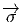(y
1) et donc, eH = s−1(eH), ce qui
montre que s ∈ H. Ainsi Q ⊂ P est un fibré principal de groupe
structural H.
Réciproquement, donnons nous H ⊂ G et une réduction Q =
Q(M,H) ⊂ P = P(M,G). Définissons  : P
: P G∕H par ∀y ∈ Q ⊂
P,
G∕H par ∀y ∈ Q ⊂
P, (y) = eH ∈ G∕H. La fonction
(y) = eH ∈ G∕H. La fonction  est ainsi constante sur les
fibres de Q. Soient maintenant deux points y0 ∈ Q et y ∈ P que
nous prenons dans la même fibre de P mais nous supposons que y
n’appartient pas nécessairement à Q. Il existe donc un élément g de
G tel que y = y0g, alors
est ainsi constante sur les
fibres de Q. Soient maintenant deux points y0 ∈ Q et y ∈ P que
nous prenons dans la même fibre de P mais nous supposons que y
n’appartient pas nécessairement à Q. Il existe donc un élément g de
G tel que y = y0g, alors  (y) =
(y) =  (y0g) = g−1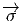(y
0) = g−1eH =
g−1H ∈ G∕H. On a ainsi construit une application
(y0g) = g−1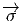(y
0) = g−1eH =
g−1H ∈ G∕H. On a ainsi construit une application  : P
: P G∕H
équivariante sous l’action de G. Cela détermine, en vertu du théorème
énoncé au 2 du 3.3.10 une section globale de E(M,G∕H) = PmodH.
G∕H
équivariante sous l’action de G. Cela détermine, en vertu du théorème
énoncé au 2 du 3.3.10 une section globale de E(M,G∕H) = PmodH.
-
Réduction de GL(n, ℝ) à SO(n) : structures riemanniennes
-
On peut rattacher canoniquement à une variété différentiable M son
fibré FM des repères linéaires. C’est un fibré principal de groupe
structural GL(n, ℝ). Choisissons maintenant une réduction à un
sous-fibré de groupe structural SO(n). Choisir une telle réduction
consiste à sélectionner une certaine classe de repères, que nous
appellerons orthonormés, telle que l’un quelconque d’entre eux puisse
s’obtenir à partir de n’importe quel autre à l’aide d’une matrice du
groupe orthogonal SO(n). Par définition, une variété riemannienne
(M en l’occurrence) est une variété différentiable de dimension n
pour laquelle on a choisi une réduction du fibré FM des repères
linéaires à un sous-fibré de groupe structural SO(n). Le sous-fibré
en question se note alors OFM (“Orthogonal Frame Bundle”) et
prend le nom de fibré des repères orthonormés. Le lecteur peut
se demander où est la métrique dans cette approche… La réponse
est la suivante : le tenseur métrique s’identifie précisément avec
la section globale du fibré en espaces homogènes GL(n)∕SO(n) qui
définit la réduction (nous oublions momentanément les problèmes
liés à des exigences de non dégénérescence, de positivité etc ). Noter
que la dimension de cet espace homogène est égale à dim(GL(n)) −
dim(SO(n)) = n2 − n(n − 1)∕2 = n(n + 1)∕2, et ses éléments
peuvent donc s’identifier, comme il se doit, à des tenseurs de rang
deux complètement symétriques. Intuitivement, choisir une structure
riemannienne revient à conférer une “forme géométrique” à une
variété différentiable ; c’est ainsi que c’est le choix de la métrique qui
fait la différence entre un ballon de foot, un ballon de rugby et… une
bouteille de vin (bouchée !) et la multiplicité des réductions possibles
coïncide avec la multiplicité des métriques riemanniennes qu’on peut
choisir, pour une variété différentiable donnée. Vu l’importance de
cette notion, nous y reviendrons abondamment dans le chapitre
suivant.
-
Réduction de GL(2n, ℝ) à GL(n, ℂ) : structures presque-complexes
-
L’idée est essentiellement la même que dans l’exemple précédent,
à ceci près que M est supposé être de dimension paire et qu’on
choisit maintenant une réduction du fibré des repères linéaires à un
sous-fibré dont le groupe orthogonal doit être SU(n). Les variétés
pour lesquelles on a effectué un tel choix se nomment variétés
presque-complexes et l’analogue de la métrique est ici la donnée,
en chaque espace tangent T(M,x) d’un endomorphisme j de carré
égal à −1. Cet opérateur peut encore s’identifier à une section
globale d’un fibré en espaces homogènes GL(2n, ℝ)∕GL(n, ℂ). Le
lecteur peut sans doute se demander pourquoi on parle ici de variétés
presque-complexes et non, tout simplement, de variétés complexes.
Il se trouve que ces deux notions sont de nature assez différentes (et
la terminologie est désormais consacrée) : la notion de structure
presque-complexe est, comme on vient de le voir, analogue à la notion
de structure riemannienne et est associée au choix d’une réduction
du fibré des repères pour une variété différentiable ; la notion
de structure complexe est, quant à elle, analogue à la notion de
structure de variété topologique, de variété linéaire par morceaux
ou analogue à la notion de structure différentiable elle-même (on
choisit des cartes à valeur dans ℂn et non plus dans ℝn et on impose
aux fonctions de transitions d’être holomorphes). Nous n’aurons
pas le loisir, dans cet ouvrage, d’étudier la géométrie des variétés
complexes ; notons simplement que la terminologie vient du fait
qu’une variété complexe donnée fournit une variété différentiable qui
se trouve automatiquement munie d’une structure presque-complexe
(l’endomorphisme j de carré égal à −1 provenant tout simplement de
la multiplication par le nombre complexe i). Le passage inverse, celui
d’une structure presque-complexe à une structure complexe, n’est pas
automatique car il nécessite la vérification d’une certaine condition
d’intégrabilité.
On peut aussi parler de variétés presque-hermitiennes lorsque la
réduction du groupe structural va de GL(2n, ℝ) à U(n) = O(2n) ∩
GL(n, ℂ). Dans ce cas, il existe une métrique h compatible avec la
structure presque-complexe, en ce sens que h(v1,v2) = h(jv1,jv2). On
peut alors construire une forme hermitienne H(v1,v2) = 1
2(h(v1,v2)−
ih(jv1,v2)) et une forme presque-Kählerienne ω(v1,v2) = h(jv1,v2).
-
Réduction de GL(4,n) à Sp(n) : structures presque-quaternioniques
-
L’histoire est la même que dans le cas précédent et les commentaires
sont analogues. La section globale du fibré en espaces homogènes
GL(4n, ℝ)∕Sp(n) caractérisant la réduction peut s’identifier à la
donnée, en chaque espace tangent T(M,x) de trois opérateurs j1,
j2, j3, tous trois de carré égal à moins l’identité, et satisfaisant aux
relations j1j2 = −j2j1 = j3, j2j3 = −j3j2 = j1 et j3j1 = −j1j3 = j2.
La raison du “presque” dans le presque-quaternionique est analogue
celle donnée dans le paragraphe précédent à condition toutefois de
remplacer nombres complexes par quaternions. Ici Sp(n) désigne le
groupe compact des unitaires quaternioniques, quelquefois désigné par
U(n, ℍ). Nous n’aurons pas le loisir de revenir sur ce sujet dans le
cadre de cet ouvrage.
-
Remarques
-
Avant de quitter cette partie consacrée aux réductions de fibrés
principaux, notons que les représentations d’un groupe G sont aussi
des représentations de tout sous-groupe H de G. Ainsi donc, les fibrés
associés à P(M,G) sont aussi associés à tout sous-fibré Q(M,H) avec
H ⊂ G. Il est rassurant de savoir que le fibré tangent TM défini à
partir du fibré des repères linéaires FM coïncide avec celui qu’on
peut définir à partir du fibré OFM des repères orthonormés !
3.5 Changement de groupe structural dans les fibrés principaux : extension
et quotient
Les deux sous-sections précédentes étaient, en quelque sorte, complémentaires, les
deux qui suivent le seront aussi.
3.5.1 Extension (passage de G à  avec G ∼
avec G ∼ |H)
|H)
-
Méthode générale
-
Le problème est le suivant : on part d’un espace fibré P = P(M,G)
et on veut remplacer le groupe structural G par un groupe  tel
que G soit isomorphe à
tel
que G soit isomorphe à  ∕H où H est un sous-groupe distingué de
∕H où H est un sous-groupe distingué de
 . Le cas le plus fréquent est celui où G est un groupe qui n’est
pas simplement connexe et où on veut le remplacer par son groupe
de recouvrement universel
. Le cas le plus fréquent est celui où G est un groupe qui n’est
pas simplement connexe et où on veut le remplacer par son groupe
de recouvrement universel  . H est alors un sous-groupe discret du
centre de
. H est alors un sous-groupe discret du
centre de  et s’identifie au groupe d’homotopie π1(G) (voir le chapitre
sur les groupes). Pour illustrer cette situation, voici un exemple
dont l’importance physique est importante. La variété différentiable
M est un modèle pour l’espace-temps et P désigne le fibré des
repères orthonormés correspondant au choix d’une certaine métrique
sur M. Certains champs de matière vont être représentés par des
sections de fibrés associés à P. Ces fibrés seront construits à partir de
représentations du groupe SO(n) (en physique quadri-dimensionelle,
généralement SO(3, 1) ou SO(4)). Dans bien des cas, cependant, les
champs de matière qui nous intéressent ne correspondent pas vraiment
à des représentations de SO(n) mais à des représentations de son
groupe de recouvrement universel Spin(n) c’est à dire Spin(3, 1) =
SL(2, ℂ) si G = SO(3, 1) et Spin(4) = SU(2) ×SU(2) si G = SO(4).
On se souvient en effet que les représentations de G peuvent également
être considérées comme des représentations de
et s’identifie au groupe d’homotopie π1(G) (voir le chapitre
sur les groupes). Pour illustrer cette situation, voici un exemple
dont l’importance physique est importante. La variété différentiable
M est un modèle pour l’espace-temps et P désigne le fibré des
repères orthonormés correspondant au choix d’une certaine métrique
sur M. Certains champs de matière vont être représentés par des
sections de fibrés associés à P. Ces fibrés seront construits à partir de
représentations du groupe SO(n) (en physique quadri-dimensionelle,
généralement SO(3, 1) ou SO(4)). Dans bien des cas, cependant, les
champs de matière qui nous intéressent ne correspondent pas vraiment
à des représentations de SO(n) mais à des représentations de son
groupe de recouvrement universel Spin(n) c’est à dire Spin(3, 1) =
SL(2, ℂ) si G = SO(3, 1) et Spin(4) = SU(2) ×SU(2) si G = SO(4).
On se souvient en effet que les représentations de G peuvent également
être considérées comme des représentations de  mais que certaines
représentations de
mais que certaines
représentations de  ne correspondent à aucune représentation de G
(ainsi, les spins demi-entiers correspondent à des représentations de
SU(2) mais pas à des représentations de SO(3)). Lorsque la topologie
de M et triviale, le fait de “considérer des spineurs” n’offre aucune
difficulté ; les choses changent lorsque M cesse d’être trivial : en
d’autre termes, il existe des espaces qui n’admettent pas de spineurs !
A l’opposé, il existe des espaces qui admettent plusieurs types de
spineurs. Nous discuterons de nouveau de ces problèmes un peu plus
loin.
ne correspondent à aucune représentation de G
(ainsi, les spins demi-entiers correspondent à des représentations de
SU(2) mais pas à des représentations de SO(3)). Lorsque la topologie
de M et triviale, le fait de “considérer des spineurs” n’offre aucune
difficulté ; les choses changent lorsque M cesse d’être trivial : en
d’autre termes, il existe des espaces qui n’admettent pas de spineurs !
A l’opposé, il existe des espaces qui admettent plusieurs types de
spineurs. Nous discuterons de nouveau de ces problèmes un peu plus
loin.
Revenons à un cadre plus général. On se donne G = Ĝ∕H. On a donc
un homomorphisme (surjectif) de groupe 
 G de noyau H = Kerλ.
On appellera “extension de fibré principal P = P(M,G) à un fibré
de groupe structural 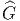” la donnée d’un fibré principal 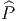 =
G de noyau H = Kerλ.
On appellera “extension de fibré principal P = P(M,G) à un fibré
de groupe structural 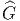” la donnée d’un fibré principal 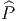 =  (M,
(M, )
et d’un homomorphisme de fibré
)
et d’un homomorphisme de fibré  :
: 
 P qui soit compatible
avec les actions respectives de G et
P qui soit compatible
avec les actions respectives de G et  et avec l’homomorphisme de
groupe λ ; en d’autres termes, 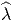 doit préserver les fibres (c’est un
homomorphisme de fibré) et être tel que
et avec l’homomorphisme de
groupe λ ; en d’autres termes, 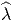 doit préserver les fibres (c’est un
homomorphisme de fibré) et être tel que
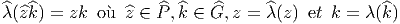
L’existence d’une ou de plusieurs extensions correspondant à une
situation donnée (c’est à dire le fibré P, le groupe G, etc ) dépend
bien entendu de la situation considérée …
Le problème de l’extension d’un fibré principal (passage de G à 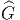 avec
G =  ∕H) peut être décrit de façon imagée par la figure suivante
(3.18).
∕H) peut être décrit de façon imagée par la figure suivante
(3.18).
On voit que  est aussi un H-fibré principal au dessus de P (voir
également la discussion menée en section 3.3.4) et que P ∼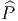∕H.
est aussi un H-fibré principal au dessus de P (voir
également la discussion menée en section 3.3.4) et que P ∼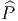∕H.
-
Structures spinorielles
-
Dans le cas particulier où P = OFM désigne le fibré des repères
orthonormés d’une variété riemannienne M, le groupe structural est
G = SO(n) et 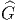 = Spin(n). On dit que la variété M est une variété
spinorielle s’il existe une extension  =
=  (M,Spin(n)). Choisir une
structure spinorielle pour une variété riemannienne donnée M consiste à
choisir une extension
(M,Spin(n)). Choisir une
structure spinorielle pour une variété riemannienne donnée M consiste à
choisir une extension  (s’il en existe une). Le fibré 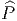, s’il existe,
est alors désigné sous le nom de fibré des repères spinoriels ou,
tout simplement fibré de spin et dénoté 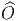FM. Dans les bons cas
(“bon” signifiant qu’on peut ne pas se soucier du problème !),
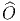FM existe et est unique, à isomorphisme près. Notons encore que
le choix d’une structure spinorielle est tributaire du choix d’une
structure riemannienne (on choisit d’abord P = P(M,SO(n)), puis
(s’il en existe une). Le fibré 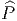, s’il existe,
est alors désigné sous le nom de fibré des repères spinoriels ou,
tout simplement fibré de spin et dénoté 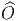FM. Dans les bons cas
(“bon” signifiant qu’on peut ne pas se soucier du problème !),
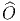FM existe et est unique, à isomorphisme près. Notons encore que
le choix d’une structure spinorielle est tributaire du choix d’une
structure riemannienne (on choisit d’abord P = P(M,SO(n)), puis
 = 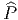(M,Spin(n)), mais on doit se souvenir que deux métriques
distinctes définissent des fibrés P(M,SO(n)) différents. On sait que la
représentation fondamentale de SO(n) agissant sur ℝn permet de
fabriquer le fibré tangent TM = P ×SO(n)ℝn comme fibré associé à
P et de définir l’ensemble des champs de vecteurs ΓTM comme
ensemble des sections de TM. De la même façon, la représentation
fondamentale de Spin(n) agissant sur ℂs avec s = 2[n∕2], [n∕2] désignant la
partie entière de n∕2, permet de fabriquer le fibré des spineurs
SM =
= 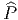(M,Spin(n)), mais on doit se souvenir que deux métriques
distinctes définissent des fibrés P(M,SO(n)) différents. On sait que la
représentation fondamentale de SO(n) agissant sur ℝn permet de
fabriquer le fibré tangent TM = P ×SO(n)ℝn comme fibré associé à
P et de définir l’ensemble des champs de vecteurs ΓTM comme
ensemble des sections de TM. De la même façon, la représentation
fondamentale de Spin(n) agissant sur ℂs avec s = 2[n∕2], [n∕2] désignant la
partie entière de n∕2, permet de fabriquer le fibré des spineurs
SM =  ×Spin(n)ℂs comme fibré associé à
×Spin(n)ℂs comme fibré associé à  et de définir l’ensemble
des champs de spineurs ΓSM comme ensemble des sections de
SM.
et de définir l’ensemble
des champs de spineurs ΓSM comme ensemble des sections de
SM.
Pour ce qui est des rappels concernant la représentation fondamentale
de Spin(n), les algèbres de Clifford, etc , voir la fin du chapitre
précédent.
On montre que l’existence d’une structure spinorielle, pour une variété
donnée, est liée à l’annulation d’une certaine classe caractéristique (la
deuxième classe de Stiefel-Whitney). Mis à part une courte remarque du
même type à la fin de cette section, ce phénomène ne sera pas discuté dans
le cadre de notre ouvrage.
-
Bosons et fermions
-
En physique théorique, on montre que, dans le cadre de la théorie
quantique des champs, et en dimension égale à 4, les particules
obéissant à une statistique de Fermi-Dirac (les fermions) sont des
particules de spin demi-entier, alors que celles obéissant à une
statistique de Bose-Einstein (les bosons) sont des particules de spin
entier. Nous n’expliquerons pas ici la signification de ce résultat
célèbre (le théorème spin-statistique) puisque nous n’aborderons pas
la théorie quantique des champs dans le cadre de cet ouvrage.
Cependant, le résultat en question (qui n’est vraiment bien compris et
démontré qu’en dimension 4) nous permet d’introduire la terminologie
suivante en dimension quelconque : nous dirons qu’un champ est
un champ bosonique s’il s’agit d’une section d’un fibré vectoriel
associable au fibré des repères orthonormés d’une variété riemannienne
M ; nous dirons que c’est un champ fermionique s’il s’agit d’une
section d’un fibré vectoriel associable au fibré des repères spinoriels
d’une variété riemannienne M, qui soit telle que la représentation
correspondante (celle qui définit le fibré associé) soit une représentation de
Spin(n) qui ne puisse pas être considérée comme une représentation
du groupe SO(n) mais seulement comme une représentation de
Spin(n).
Notons que, bien que moins proche de notre intuition, les champs spinoriels
(sections de SM) sont plus “fondamentaux” que les champs vectoriels
(sections de TM). Ceci est déjà évident au niveau de la théorie des
représentations de SU(2) : on peut construire n’importe quelle
représentation de ce groupe à partir de la fondamentale (qui est spinorielle
). Cette dernière est de dimension 2 et correspond physiquement à ce qu’on
appelle un champ de spin 1∕2. Par ailleurs, il est facile de voir qu’on peut
construire un champ de vecteurs à partir de (deux) champs de spineurs,
mais pas le contraire…
-
Structure quarkique
-
Nous venons de discuter le cas particulier de G = SO(n) = Spin(n)∕ℤ2
mais nous aurions pu également considérer le cas de fibrés avec groupe
structural G = SU(3)∕ℤ3 : le fait qu’il soit, ou non, possible,
de définir des “champs de quarks” (associés à la représentation
fondamentale de SU(3), ou plus généralement des champs associés à des
représentations dont la trialité est différente de zéro) pour une variété M
considérée comme base d’un fibré principal P(M,SU(3)∕ℤ3) n’est pas
quelque chose d’automatique…. On pourrait alors parler de “structure
quarkique” !
-
Structure encordée
-
Il ne faudrait pas croire que le groupe H, tel que G =  ∕H dont il a
été question dans ce chapitre consacré aux extensions d’espaces
fibrés soit nécessairement discret. C’est ainsi qu’en théorie des
cordes, la variété M est remplacée par LM (le “loopspace” de M),
c’est à dire l’ensemble des applications de S1 dans M, G est, de la
même façon remplacé par LG et P par LP. L’ensemble LG est
naturellement un groupe (de dimension infinie) et LP est fibré en
LG au dessus de LM. Dans ce cas, toutefois, ce ne sont pas tant
les représentations de LG qui nous intéressent, mais celles d’une
extension centrale 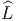G de LG (on a Lie(
∕H dont il a
été question dans ce chapitre consacré aux extensions d’espaces
fibrés soit nécessairement discret. C’est ainsi qu’en théorie des
cordes, la variété M est remplacée par LM (le “loopspace” de M),
c’est à dire l’ensemble des applications de S1 dans M, G est, de la
même façon remplacé par LG et P par LP. L’ensemble LG est
naturellement un groupe (de dimension infinie) et LP est fibré en
LG au dessus de LM. Dans ce cas, toutefois, ce ne sont pas tant
les représentations de LG qui nous intéressent, mais celles d’une
extension centrale 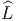G de LG (on a Lie( G) = Lie(LG) ⊕ ℝ).
Dans ce cas, H = U(1) et la question se pose de savoir si LP peut
être étendu à un fibré
G) = Lie(LG) ⊕ ℝ).
Dans ce cas, H = U(1) et la question se pose de savoir si LP peut
être étendu à un fibré  P de groupe structural 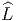G. Là encore,
l’existence n’est pas assurée, et, en cas d’existence, l’unicité non
plus. Lorsque 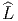P existe, on dit que le fibré en boucles LP possède
une structure encordée (“a string structure for a loop bundle”
…).
P de groupe structural 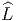G. Là encore,
l’existence n’est pas assurée, et, en cas d’existence, l’unicité non
plus. Lorsque 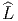P existe, on dit que le fibré en boucles LP possède
une structure encordée (“a string structure for a loop bundle”
…).
-
Interprétation cohomologique
-
L’existence et l’unicité (ou non) des extensions de fibrés peuvent se décrire
de façon cohomologique. Cette interprétation dépasse le cadre que nous
nous sommes fixés. Mentionnons seulement que l’existence de  peut être
lié à l’annulation d’une certaine classe de cohomologie appartenant à
H2(M,H). Dans le cas des structures spinorielles, H = ℤ
2 et la classe en
question, dont l’annulation fournit une condition nécessaire et suffisante à
l’existence de
peut être
lié à l’annulation d’une certaine classe de cohomologie appartenant à
H2(M,H). Dans le cas des structures spinorielles, H = ℤ
2 et la classe en
question, dont l’annulation fournit une condition nécessaire et suffisante à
l’existence de  , s’appelle deuxième classe de Stiefel-Whitney . Dans
le cas des structures encordées, il faut considérer H2(LM,U(1))
puisque LM est la base du fibré considéré, ce groupe de cohomologie
(de LM) peut alors être relié à H3(M, ℤ) et … ceci est une autre
histoire.
, s’appelle deuxième classe de Stiefel-Whitney . Dans
le cas des structures encordées, il faut considérer H2(LM,U(1))
puisque LM est la base du fibré considéré, ce groupe de cohomologie
(de LM) peut alors être relié à H3(M, ℤ) et … ceci est une autre
histoire.
3.5.2 Quotient (passage de G à K avec K ∼ G|H, H sous-groupe distingué
de G)
On part de P = P(M,G), on se choisit un sous-groupe distingué H de G et on
veut remplacer P par Q = Q(M,K), avec K = G|H. Cette opération est, en un
sens, inverse de celle précédemment considérée. La méthode est simple puisqu’il
s’agit de “diviser” P par H en considérant l’ensemble quotient Q = P∕H où
l’action de H sur P est obtenue par restriction de celle de G. Il est évident que ce
type de changement de groupe structural n’offre aucune difficulté, contrairement à
la situation inverse décrite au paragraphe précédent. Il faut évidemment veiller
à ce que H soit distingué dans G, de façon à ce que le quotient G|H
soit bien un groupe. Nous n’en dirons pas plus sur ce sujet puisque la
discussion résulte simplement des analyses déjà effectuées dans les sections
précédentes. En particulier, P est un H-fibré principal au dessus du fibré
quotient Q, lequel se trouve être, également, dans ce cas particulier, un fibré
principal.
3.6 Groupe des automorphismes. Groupe de jauge
3.6.1 Remarque terminologique
Nous utiliserons souvent l’expression “repère en x” —sans mettre les
guillemets !— pour parler d’un point z de P = P(M,G) se projetant au point x,
même si le fibré considéré n’est pas un sous-fibré de l’espace des repères mais un
fibré principal quelconque au dessus de M, avec groupe de structure G. Le
contexte devrait suffire à préciser s’il s’agit d’un repère de l’“espace interne”
—comme disent les physiciens— c’est à dire un élément d’un fibré principal
quelconque non relié au fibré FM des repères linéaires, ou, au contraire, d’un
repère de l’“espace externe”, c’est à dire un élément de FM (ou de OFM, ou
d’un autre sous-fibré de FM).
3.6.2 Automorphismes verticaux d’un espace fibré principal (définition)
3.6.3 Ecriture locale des transformations de jauge
Soit Φ une transformation de jauge, z un élément de P et σ une section locale au
voisinage de x = π(z) ∈ M. Le repère Φ(σ(x)) étant dans la même fibre (au
même point !) que le repère mobile σ(x), il doit être possible d’atteindre le
premier à partir du second par l’action d’un élément approprié de G que
nous noterons g(x), puisque G est transitif sur les fibres. Cet élément
est donc défini par l’équation Φ(σ(x)) = σ(x)g(x) c’est à dire encore
par
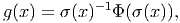
en
utilisant la notation introduite en fin de section 3.2.1. Notons que g(x) dépend
non seulement de Φ mais aussi de la section σ choisie ; on pourrait utiliser la
notation un peu lourde σg(x) pour désigner cet élément.
Lorsque P est trivial, on sait qu’il existe des sections globales. Soit σ une telle
section, alors, l’équation précédente définit une application de M dans G ;
réciproquement, la donnée d’une application g(x) de M dans G permet, lorsque le
fibré principal est trivial, de définir, via le choix d’une section globale σ, une
transformation de jauge Φ par la même équation. Lorsque P est trivial, on
peut donc identifier le groupe de jauge G avec le groupe Ω0(M,G) des
applications différentiables de M dans G. La correspondance n’est cependant pas
canonique puisqu’elle dépend du choix d’une section globale σ. Cette
identification “explique” pourquoi les automorphismes verticaux sont désignés
par les physiciens (des particules) sous le nom de “transformations de
jauge locales”, le mot “local” se référant ici à la dépendance “en x” car
la transformation g(.) elle-même est globalement définie lorsque P est
trivial.
3.6.4 Deux autres définitions des transformations de jauge
- Soit Φ : P
 P une transformation de jauge. On sait que Φ(z) est
dans la même fibre que z, on doit donc pouvoir obtenir Φ(z) à partir
de z par action à droite d’un élément de G que nous désignerons par
ϕ(z) :
Nous obtenons donc ainsi une application ϕ de P dans G, mais
cette application n’est pas quelconque ; en effet, l’égalité Φ(zg) =
Φ(z)g peut s’écrire également zgϕ(zg) = zϕ(z)g et on obtient donc la
condition
Il est évident que Φ et ϕ se déterminent l’un l’autre ; on peut
donc identifier le groupe de jauge G avec l’ensemble ΩAd0(P,G) des
applications de P dans G qui sont équivariantes par l’action adjointe
de G.
P une transformation de jauge. On sait que Φ(z) est
dans la même fibre que z, on doit donc pouvoir obtenir Φ(z) à partir
de z par action à droite d’un élément de G que nous désignerons par
ϕ(z) :
Nous obtenons donc ainsi une application ϕ de P dans G, mais
cette application n’est pas quelconque ; en effet, l’égalité Φ(zg) =
Φ(z)g peut s’écrire également zgϕ(zg) = zϕ(z)g et on obtient donc la
condition
Il est évident que Φ et ϕ se déterminent l’un l’autre ; on peut
donc identifier le groupe de jauge G avec l’ensemble ΩAd0(P,G) des
applications de P dans G qui sont équivariantes par l’action adjointe
de G.
- La troisième définition de G résulte en fait de la précédente et de
la discussion menée en section 3.3.10 (description 2). Soit, en effet
AdP = P×AdG le fibré adjoint, défini comme fibré en groupes, associé
à P grâce à l’action adjointe de G sur lui-même (voir section 3.3.6), les
éléments 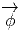 de AdP sont des classes d’équivalences z.k = zg.g−1kg et
les sections 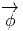(x) de AdP peuvent donc s’identifier aux applications de
P dans G qui sont Ad-équivariantes. Ainsi, nous pouvons également
définir le groupe de jauge G comme l’ensemble des sections du fibré
adjoint AdP.
3.6.5 Automorphismes quelconques d’un espace fibré principal
Soit P = P(M,G) un fibré principal et G son groupe d’automorphismes verticaux
(groupe de jauge). Nous allons à présent considérer des automorphismes plus
généraux que ceux considérés dans les sous-sections précédentes. Jusqu’à présent,
nos automorphismes étaient verticaux, en ce sens que l’image Φ(z) de z par Φ
était dans la même fibre que z. Nous allons garder les conditions 1 et 3 données
dans la définition du groupe de jauge (section 3.6.2) mais atténuer la deuxième
condition ; les automorphismes devront préserver les fibres au sens suivant :
l’image d’une fibre devra être une fibre, mais on n’imposera pas le fait qu’image
et antécédent appartiennent à la même fibre ! En d’autres termes, si
x désigne un point de M, l’ensemble Φ(π−1(x)), image de la fibre au
dessus de x par Φ doit être une fibre de P. Cette fibre image se projette
en un certain point y de M. L’action d’un tel automorphisme Φ définit
donc également une application de M dans M (à x on associe le point y
tel que y = π(Φ(π−1(x)))). Cette application est, par construction, un
difféomorphisme. On obtient donc de cette façon une projection du groupe AutP
des automorphismes de P (le groupe engendré par les automorphismes que nous
venons de définir) sur le groupe DiffM des difféomorphismes de M.
Deux automorphismes de P se projetant sur le même difféomorphisme de
M diffèrent manifestement (au sens de la composition des morphismes)
par un automorphisme ne changeant pas le point de base, c’est à dire
par un automorphisme vertical. Localement, ces “symétries de jauge”
(nom qu’on donne quelquefois aux éléments de AutP) sont donc codées à
l’aide d’un difféomorphisme de M et d’une transformation de jauge. Plus
précisément, on a la fibration principale G AutP
AutP DiffM (noter que G
est un groupe de dimension infinie) qu’on peut représenter par la figure
3.19
DiffM (noter que G
est un groupe de dimension infinie) qu’on peut représenter par la figure
3.19
3.6.6 Action des automorphismes sur les espaces fibrés associés
- Soit E = P ×GF un espace fibré associé au fibré principal P =
P(M,G) obtenu à partir de l’action à gauche ρ de G sur F, z.f =
zg.ρ(g−1)f ∈ E. L’action à droite de G sur P n’existe plus au niveau
de E puisqu’on a fabriqué un espace quotient en divisant par cette
action. Par contre, on peut utiliser l’action à gauche de G sur P pour
définir une action (à gauche) de G sur n’importe quel fibré associé à
P. Ainsi,
- G agit non seulement sur E mais sur l’espace ΓE de ses sections. Soit
u ∈ ΓE, x ∈ M, u(x) ∈ E ;on définit
3.6.7 Le cas des espaces vectoriels (un cas trivial mais instructif !)
Un fibré vectoriel n’est autre, intuitivement, qu’une famille Ex d’espaces vectoriels
de même dimension, “collés” ensemble, et paramétrisés par une variété (x ∈ M).
Lorsque M se réduit à un seul point, on n’a qu’une seule fibre et donc un seul
espace vectoriel. On peut donc considérer un espace vectoriel E comme un
fibré vectoriel au dessus d’un point ! Ce fibré vectoriel particulièrement
trivial est associé à un fibré principal également constitué d’une seule
fibre, fibre qui n’est autre que l’ensemble P des bases de l’espace vectoriel
E. Si on suppose que E est isomorphe à ℝn, on voit que cette fibre est
difféomorphe au groupe GL(n, ℝ). Si on choisit une base σ = {σμ} de
référence (une section !), on obtient une correspondance bi-univoque
entre bases (éléments de P) et matrices inversibles (éléments du groupe
GL(n, ℝ)). L’identification de P avec GL(n, ℝ) dépend de la base σ choisie. Le
groupe matriciel GL(n, ℝ) agit sur P ; cette action ne dépend pas du
choix de σ. En effet, si e = (eμ) ∈ P et Λ = (Λνμ) ∈ GL(n, ℝ), on obtient
e′ = eΛ ∈ P via eν′ = eμΛνμ. Les vecteurs u de l’espace vectoriel E sont des
classes d’équivalence u = eμ.uμ avec e = {e
μ}∈ P et uμ ∈ ℝn, la relation
d’équivalence identifiant eμ.uμ avec e
νΛμν.(Λ−1)
ρμuρ. Le groupe GL(n, ℝ) n’agit
donc pas sur E (il n’agit que sur les composantes des vecteurs de E). Par
contre, l’espace vectoriel E possède un groupe d’automorphismes AutE (les
applications linéaires bijectives). Si u ∈ E et Φ ∈ AutE alors Φu ∈ E ;
les automorphismes Φ agissent aussi sur les bases e = {eμ}, l’action en
question résultant de l’action sur chacun des vecteurs de base. Il faut bien
voir que les groupes AutE et GL(n, ℝ) sont différents ! Cependant, si on
se choisit une base σ = σμ de référence, on peut, de façon élémentaire
—voir cours de Terminale de nos lycées— associer, à tout élément Φ de
AutE, une matrice Λ de GL(n, ℝ). Dans le cas d’un espace vectoriel,
donc, le groupe structural et le groupe des automorphismes (qui, dans ce
cas, sont nécessairement verticaux), bien que conceptuellement distincts,
sont identifiables dès qu’on se choisit une base de référence (c’est à dire
une section de ce fibré !). En particulier, lorsque E est de dimension
finie, ces deux groupes sont de dimension finie. Dès qu’on passe au cas
de fibrés vectoriels au dessus d’une variété M non réduite à un point,
l’identification n’est plus possible : G = GL(n, ℝ) reste ce qu’il était
mais G = AutV P devient un groupe de dimension infinie qu’on peut se
représenter intuitivement comme une famille de groupe d’automorphismes
d’espaces vectoriels (les fibres de E) paramétrisés par les points de la base
M.


 = Φ (u (x))](source530x.png)